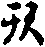
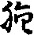
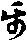
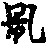
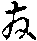
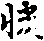
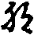
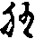

四分律疏卷第三
●次釋殺戒。四門分別。一廣就三趣以彰煞義。二人趣之中明煞父母逆背恩養義。三煞羅漢逆。四出佛身血逆。此二損害福田。
先解初門。廣明人趣。自有其四。一制戒意。人趣報勝。善因所招。形心俱是受道之器。但出家之人。應懷四等。今反瞋忿。斷懷陰境。違慈惱他。損害道器。過中之甚。為斯聖禁。
二釋名者。五陰實法中。假立眾生名。斷於五陰。名為煞生。此是所防。戒是能治。謂能所通舉名煞生戒。此從境用作名也。若依多論辨五陰中。但煞色陰。以色是等受刀杖故。若就通相。以色壞故。四陰命根亦壞。如破瓶失乳。謂此別有非色心。命根連持。色心今壞。五陰命根同壞。二就色中。但煞未來。以過去已滅不得煞。現在一念不住不可煞。以現在受刀杖。使未來不續。三就現在未來中。但煞無記。無記受刀杖故。善惡是方便。不礙刀杖。四就無記中。但煞報色。不害餘三。如破瓶失乳。通煞四種。五就報色。但煞觸塵不煞餘八。通相辨煞。亦煞諸根三塵。六就觸中。唯斷頭腰二處。觸者即死。頭是多入聚處。腰是出入息住處。故壞餘處觸。不必定死。通論並煞諸觸。若依成論。一念實法中無煞生。必以斷相續假故。乃名為煞。故論云。五陰相續中。有眾生名。壞此相續。故名煞生。謂業煩惱為命根。色心為命體。相續是命義。今斷相續。故名煞生。
三具緣。通緣如上。別緣有五。一者是人。簡餘趣輕故。二是人想。想疑輕故。三者煞心。以其無心。全無犯故。四起方便。以無方便境不可壞故。雖方便加害。若命未斷。所頑未畢。思心不暢。亦不成重。故須第五斷命。
四闕緣義。若闕初緣三句蘭罪。一非人人想。二畜生人想。三杌作人想。初緣闕竟還立。若闕第二人想。容有六蘭。迷法想闕當法想轉想三句。文雖是一。義含三句。一人非人想煞。若根本迷人。作非人想。煞人無罪。非人有吉。今律文結蘭者。據本作人想往煞。已得偷蘭。臨至人所轉作非人想煞。若結後心。應得吉羅。隱其後心之罪。結其前心。故得偷蘭。問若後心無蘭者。何故律文人非人想蘭。答轉想當非人時。實無偷蘭。由想當非人故。令前心偷蘭。不得攬因成果。舉由轉想。結前心蘭。故言人非人想蘭。如三諫捨者三蘭。豈可捨善心有蘭。由其捨故。前心偷蘭。住在因位。舉後捨心。結前心之蘭。故言捨者偷蘭。此亦如是。二人作畜生想。三人作杌想。問人非人想結前心蘭者。向闕境緣。非人人想。亦應舉後結前心。古人解云。為成人家方便故。闕心結前。闕境結後。以文俱偷蘭故。作此解時。非人人想有前心吉。此定不爾。今釋非人人想。亦結前心。所以爾者。若本煞非人。後心當人。可言為成人方便。結後心蘭。非人前吉。隱而不說。今文所辨。本意煞人。非人境差。若人想煞。心恒在本境。只以非人境差。闕前煞人之業。更不成重。即是煞人方便前生。非人之境後起。猶是舉其後境。結前心方便。比於轉想。本迷兩殊。俱結前心。如本煞張。後對異境。張人方便前已得竟。即此又是非人境上。迷非轉想。本無吉羅。即異趣上。五是此結死爾。一切類然。次疑心闕決正心。義亦含三。謂對人境向餘三疑。是次雙闕兩緣。義亦含三。一非人鬄人處復生疑。為人為非人。二畜生疑。三杌木疑。問境心已闕。何故復須雙闕二緣。答雖可同闕。境心異故須來。問異相云何。答異境上生疑不同。闕初緣疑。當於異境別前闕第二。有斯別相故須更闕。問義雖小可異。莫不闕二。何須重闕。解言。若不出者。人情意謂。疑對本境。不成人方便。疑當異境。不成人方便。故須雙。問此得何罪。答非人疑蘭。若爾對本境疑。結前心蘭。雙闕對異疑。亦應結前心吉。解言。此之二疑。並結未疑前蘭。疑緣異吉非宗故。不論如上說。問想疑二心。疑心辨雙想。不爾者。解言。想一向故。不成雙。如人非人想。不闕境。非人人想。不闕心故。何得成雙。疑心緣兩境。對非人故。即闕境猶預故。便闕心故。得辨雙闕。又此雙闕。雙在闕心中辨。若單雙俱闕境。一六想疑並闕心一六。此亦無妨。諸戒類爾。又此言闕境等各六者。亦可單雙二闕。廣各十九。如境差說。餘戒亦然。此等二闕。下不後論。闕三全無罪。容得提吉。闕四無罪。闕五輕重二蘭。此等通別。具七方便。人趣死爾。餘二類然。輕重為別。
次煞父母。然人非化生。業寄胎報。託父母之遺軀。以成己體。兼復鞠育。其恩深重。理應敬養。報恩殖福。今反內懷瞋忿。興加逆害。違恩背養。為至情深。故制夷逆煞。義如前說。問煞父母為知得逆。不知得逆。答本漫心無簡。若對父母雖可知。稱本所期煞。亦逆罪故。見曰。實是父作。非父想煞。不得出家。若本剋心。不欲煞父。作賊想而煞。父境雖壞。恒作異想。不知是父。但得夷罪。不犯逆故。伽曰。父非父想煞。得出家。不犯逆故。須知方成逆。問若父出家。成羅漢。煞父羅漢。為得一逆二逆耶。經論不同十緣。憂波問。煞父羅漢。得幾罪。佛答。得夷并二逆。又涅槃經。一者煞父王。二煞須陀洹。罪兼二重。又雜寶藏。憂婆羨王出家。立子為王。後成羅漢。子王欲煞父。父比丘言。汝得二罪。以等文斷父命時。即損恩養。亦損福田。二境死別。心緣兩害。故得兩逆一夷。夷對人境制故。文人人想。以其緣異。心緣兩害。故得二逆。又可一逆雖可二緣。莫不同一行者。既無二命。何得二罪。但可業恩是重。無別二逆。問若父出家竟。轉根為尼。若煞此尼。得煞父逆不。答伽曰。若煞女非母非羅漢。而得逆罪。謂父變作女人者是。以斯文證。故知逆罪。所以爾者。根雖有異。人者不殊。若煞此尼。有背恩義故。問若打此尼。得父罪。答但得打尼之罪。若爾煞此尼時。不得煞父之逆。解打本就位結罪。不望違恩。打時是女故。結打尼之罪。煞就違恩。此父者損壞。故得逆罪。如似一父。若當打時。道俗位別。況轉為女。故知就位得打尼之罪。問父母變作畜生。煞得何罪。答但得煞畜提罪。若爾伽煞女人。不應得煞父之逆。解父實變者。已命終竟。此謂剎那中陰。即受畜報。故得提罪。轉[打-丁+(百-日+ㄎ)]為女。猶是人報。明有違恩。是以非類。若父報得通慚。變非畜。作父想煞者。亦得逆罪。以父境死故。若不知無罪。若煞畜生父母。但亦犯提。以勞不滿故。又報劣故。故十曰頗有煞父母諸比丘與受戒。是人得受戒耶。答經謂煞畜生父母是。亦具五緣。一父母。二父母想。三煞心。四方便。五斷命。若闕初緣四蘭。謂餘人非畜。杭以鬄父處。作父想煞。闕第二緣。易想四句。謂父作餘人想。父死犯夷無逆。作餘三境想得蘭。疑亦四句。若向餘人疑。得夷無逆。向餘三疑。得蘭雙闕罪。若闕煞心。或有吉。闕第四無罪。闕第五或輕重蘭。
次煞羅漢。制戒意。阿羅漢者。修道進德。惑盡解滿。弟子之中。究竟福田。理應敬養。獲反報之福。方乃瞋忿。興加逆害。損喪聖軀。失利滋甚。為過尤深。故制逆罪。降斯已還。非其究竟真淨福田。乃可業思是重。不與逆名。辟支佛。得夷無逆。故地藏經。煞辟支得根本不犯逆。問為知得逆。不知得耶。答本漫心一切皆害。縱令不知亦逆故。見論若比丘。教比丘煞比丘。教時未得道。臨煞時此人得羅漢。教者犯夷逆。若先剋心不欲害聖。知方成逆。不知非逆。故見論畜生想煞羅漢。不犯逆。若言具闕。一同父母。
次出佛身血。佛是究竟滿足功德福田。四等開化利益無崖。理應敬養。殖無盡之福。今反瞋忿。興加逆害。侵出身血。損法身之器。過中最甚。故制逆罪。若本漫心。不問知與不知。但使出血。亦得逆罪。若本期心不欲害佛。知方成逆。若餘人想。無其逆罪。若爾不知是佛供養。何以佛邊得福。答價人漫心。一切福境。皆供養意。雖對於佛作樹神想。由心無簡。於佛得福。若剋期局。佛邊無福。亦可此律樹神告知。何以無福。
具緣亦五。一是佛。二佛想。三煞心。四方便。五出血。若闕境雙闕。各四蘭無逆。若也想疑。亦同八蘭。或闕煞心。得逆提罪。闕四無罪。闕五輕蘭無逆。以其本心。斷佛命意。是故皆蘭。若以父闕境及雙闕。對佛辨者。佛或闕二。謂理教俱闕。望本期說故。或單闕理。望亦可壞故。不闕教名。以本蘭今蘭故。父等唯一理教俱闕。不得單闕一也。以可斷故。想疑二中。對佛想疑。不簡趣之同異。亦或二或一如上辨。以不可斷故。若其父等同趣。想疑唯一。闕理不闕教。以本夷今夷故。異趣想疑。方是闕。以可斷故。闕第三緣。彼若出家父。教名嫁三人。謂並堤罪。佛與羅漢。別有違逆。若在家父。教名全異。皆無違理。第五緣若望本心。佛上俱闕。若望不可斷。單唯闕理。父等一向俱闕。就煞戒中。科文亦同然。
制緣起中分二。初明其犯。二諸居士下嘖。前文有二。初其衣鉢。與汝犯緣。二則受下正明相煞。前文分二。初如來住處。二無數方便下人緣合辨。以相讚者。則是犯人故爾。緣中文二。初說不淨觀。依教習成。二諸比丘婆求河邊已下。舉處取人。猒報求煞。為彰習成起過。前文有四。一依病設藥。嘆教行俱妙。勸令脩行。二諸比丘念已下嘿念大聖為己故說。三諸比丘下慎教剋獲。四便求刀下方求捨命。先解初文。五停心中。多貪欲故。不淨對治。但貪有五。一財貪少欲來治。二色貪說不淨行。三婬貪捨無量治。四名貪示眾生空。五法貪法空對治。色貪故說色不淨。謂是無貪善根性。貪對治故。於中有三。言說不淨者彰過歎。不淨行者嘆其能治。嘆思惟者。勸勉能行。如智論說五種不淨。一生處。謂識種子。八月九月。常在生熟二藏屎尿之中。偈言。是身為臰穢。不從究開生。亦不出薝蔔。又不出寶山。二種子不淨。謂業因緣風。吹識種子。住在赤白精中。託攬為身。偈言。是身種不淨。非餘妙寶物。不由白淨生。但從穢道出。三自性不淨。謂以三十六物。覆以薄皮。大小不淨充兩其中。偈言。地水火風賀。能變除不淨。傾海洗此身。不能令香潔。四自相不淨。九孔常流。眼出眵淚。耳出結聹。鼻中涕流。口出唌唾。大小便道。流出屎尿。偈曰。種種不淨物。充滿於中身。常流出不止。如漏囊盛物。五究竟不淨。投火為灰。或為糞土。偈曰。審諦觀此身。終必歸死處。難御無反覆。背恩如小兒。二諸比丘念已下。嘿念大聖為己故說。三諸比丘下。慎教剋獲。於中有三。謂法喻合。法中三。一諸比丘能習觀人。二即以無數者。方便習觀。三從定覺已。觀成猒報。喻合二文並三可知。四便求已下方求捨命。
第二舉處取人。何以獨言婆求河邊者。為□過非一切故。婆求河邊。於中文四。初舉前四中。第二次以無數下舉前。第三求刀已下舉前。第四次物力伽下能行煞者。言姓者。非出家人。前習觀者。故五分中彌鄰栴陀羅。十云。庶杖梵志。祇。庶杖外道。見。庶杖沙門。作沙門形相故。
正行煞中文四。一受雇行煞。二於彼江下內心追變。以其江水。能蕩眾穢。故就而洗刀。三時有一天魔已下。恐其不為。勸讚所作。欲令信故。水上而立。四時難提下受魔嘆可。廣行煞戮。觀行未成。名未離欲等。不淨觀成。故曰愛盡者。身毛不竪等。曰煞一二三等。廣行煞事。謂為度人。
呵文兩。一俗人呵。二爾時毗舍離下。佛呵。闕無比丘呵者。習觀行成。方能猒報。或前謂是為此無呵。就佛呵中文三。一發覺所由文三。初有緣集眾。祇十並言。眾欲布廿。則知是小因緣。此律既無布女之言。謂不為說法。集者為小因緣。二爾時世尊下因前致問。三阿難已下舉事以答。
第二唯願下請更改觀。更說法中文兩。一說法方便。第二爾時世尊已下更為說法。方便文二。初阿難請。二佛告下集僧。前請文中。使永無疑。或者佛說不淨。為除貪患。貪患若盡。遂不起業。集因既懲來。苦不續。言祈如此。本不欲令彼猒其現報。但觀成謬報。交求害己。然餘比丘。謂佛言如是故稱疑。或請更說法。令然解聖心。故曰永無。
正說法文四。一為說法。二彼作是念下嘿念許脩。三時諸比丘下依教習成。四從阿那覺已下觀成獲果次第。反對前煞緣中四句之文。然說數息。本為得果。明說不淨。亦是不欲則猒現報。改說言爾。初說法中文二。初出所說法。然有法喻合。法中四句。一阿那波那。舉其定。然此名出入息觀。以慧數為然。今言波那念者。從律作名。此數息有六。謂一數。二隨。三止。四觀。五還。六淨等。二寂然快樂。嘆定凝攝。三諸不善法。謂覺觀不善。是其所治。四則能下。彰能治之功。喻中秋天者。喻初定然。二無復者。喻前寂然。三又如大雨能止。喻第四功能。四猛風喻第三所治。合文可知。二爾時世尊下。正說數息觀法。對治思覺眾生。下之三文。次第可知。第三以此因緣下佛集僧以呵。改觀除疑。時遙事隔故。更須集眾。呵前不應。
戒本六句。一人。二故自手自煞業。三人命者。所害境。四持刀下。教煞業文二。初舉教煞。於中持刀與人者。安煞具煞。嘆譽死口讚煞。勸死下是勸煞。二作如是心下。總以結前三句。五結罪。六治擯。六中下二略而不釋。釋中初三略而別解。二四兩句。合而廣辨。人者一念識支。託父母胎。人報之始名初識。垂終一運是後識。中間連持是命。壞此一報名煞。祇云。人者有命人報所攝。五分。若人若似人。似人者入胎。四十九日。過是已後。盡名為人。
自下合解二四。文二。初解犯相。二若作如是比下輕重相。前文初列兩門。雜自業為四。教業十五。合十九門。准釋文中應有二十。彼有遣使書故。第二名舉兩釋。若剋害張受教煞張。三性之中。俱犯重罪。受教然王。使者犯重。能教無咎。但得張邊境差蘭罪。若剋教煞生。立則莫煞。受教者立時乃煞。能亦無罪。於立人邊無煞心故。得坐人邊方便。若漫心同犯重。使者本未犯重中間但輕。一非能教。二非所教業。約不作故。展轉使者。一切得重。並是能教所教業成故。餘可類知。
二輕重又三。一人報。二天子下果報。三境想。境想之中四門分別。第一解須境想意。二汎明境界。三辨有無。四定其多少。然犯不孤起。必也託境關心。以成其業。境有優劣是非。心有濃淡謬誤。或心境相應。犯齊一品。而業有輕重。或心不當境。人非人想疑等。或境不稱心。非人人想疑等。或境犯心不犯。有主無主想等。心犯境不犯。無主有主想等。有斯差除。明須境想定其業位。犯等四句。識想故爾。
第二汎明境界位階。且五。一內報。二外事。三法。四時。五罪。言內報分別。謂人天非畜。若四境齊犯。謂如初戒。或各昇降。如盜煞等。又就人中道俗。俗者如販賣及食家有寶等。道者如謗覆說。打搏疑藏等。通道俗者。其如二宿婬觸二麤等。然於道中內外。外局衣食。內如毀兩。又內中小大。大如謗奪。小謂減年。又具中形報。隨慎之提局。是比丘同路。乘船作尼。讚食事專尼眾。如謗覆說。義該兩眾。餘通可知。又形報中。色心分別。如婬唯色。死屍犯故。文言道道想。此通四趣。漏失同然。境仍是寬。自有約心為境。如觀許等想。染心衣食。第二外事者。如振地草木不受殘宿。勸酒足等。亦可長衣鉢類通。內外者。盜奪虫水等。第三法者。有四。一自所稱法。如媒鹿語。二妄毀呰。第二他所作法。處分諸謀。三治法。謂隨舉等。四法相道理。謂十八法。第四時者。如日暮非時及殘宿等。第五罪者。覆說之類。
第三有無有者。僧五犯中。合二十六戒中有。謂初四二六三十有一九。十十五對。有三十五。如二房含七盜。鹿媒壞生等。各有二重故爾。尼之五犯。若論同戒於僧二十六戒中。除却十戒。謂婬觸二房兩麤讚食日暮兩足等已除。十六戒同。謂三夷媒迴僧說麤捉壞非殘不酒二虫覆麤發諍等。略出戒本。豈非通有二。不同如摩觸五句。染心四句。合十八戒。對便二十一也。次言無者。通對前五。一內報無者。或是理無。如漏失戒。觸緣斯犯。何須境想以階犯位。或可略無。以道想若疑。但得蘭罪。故條部云。若非道想不疑殘。故知是略二定。略無如謗奪。兩舌毀呰嫌罵。局此境犯。今無者略。二事外略無者。如屏露露敷露燃藏衣鉢等。三法中理無者。以無所對法故。如煞盜等。言略無者。如大小妄及謀隨舉等。如祗二隨。咸有境想故爾。媒等反此。故有法想。時者如洗浴。二入聚落。今應是略。罪略無此。如尼覆戒。餘盡理無。不對罪故。
第四多小境想之文。或四或五者。但由第三人非人想。此一不定。故或四五。所以爾者。昔解若重輕相對。定有第三。故則成五。如婬戒轉想及本迷。並得夷蘭。若煞妄摩觸及二麤等。轉想蘭吉。本迷亦吉。故須第三以成五階。若犯不犯二境相對。處分盜等。盜戒則四。處分具五。五謂轉想有前心蘭故。四約本迷二境。全無罪故。故犯不犯或四或五。問重輕相對。定有第三。成五句者。何以覆說第三落在開通。以彼二戒麤非麤想故。為如此妨。故今更解。重輕之中。位有其三。若轉想定五。迷或四五。云何或四五。若想對二趣犯境起迷。猶吉罪故。為斯具五。想對無情一切無犯。是以但四。如似覆說。類前亦爾。若對下三輕重應五。然落開通。此是全謂非罪。而覆說者無犯故然。是以本以迷或四五。若准此義。犯不犯位。又有其三。如上重輕應本定五。進就不犯故。即成或四五者。今犯不犯。如盜戒中本。是或四五。今退就犯中。對非畜二物。作想轉迷。俱五亦成三位。此則二對理齊。文中綺說。謂煞等就重輕。盜約犯不犯。故有多少。又復此謂犯中有輕重。如前所論。若處分掘地非時勸之犯中無量。輕但有或四五。餘準可知也。又後上來如此釋者。可此等通本異二境。故言定五及或四五。若據本境四即齊。四謂本迷故。五則俱五。謂轉想故。但文在說用斯犯等。隨據境想。可以准知。
次釋文如常。此五則為五階。又可一具四闕。相對為四。初句境心俱重。次二境重心輕。次一境輕心重。次一俱輕。又可下四束三。人非人想疑。心差境方便。次一境差心方便。次一心境俱差方便。
○妄稱得過人法戒第四
一總解妄語。二別解大妄。總有五門。一定能妄語人。二凡夫妄語。有五階差。三境心虗實。四結罪分齊。五自言有無。
先解初門。所言聖人脩道進德。契證真實。斷除虗謬巧偽。斯盡出觀陳說。言則稱實。何有妄語。若也大聖則寂常用。理所不論。然聲聞聖人。亦有定前理觀。方便心中。聞象王入池水聲。向諸比丘說。比丘言。何有入空兩定聞象王入水聲。目連虗稱同上人法。佛言。有。是定不清淨。目連不犯。此謂理解方便想心實語。亦無妄過。以凡人無彼人二種實語故。發言成妄。凡夫亦有事中實語。如身證苦樂。但依實說。亦成實語。然非理解。未能斷彼虗誰之心。違想背心。還成妄語亦有緣事想心。若祥想心。若祥想說。亦無妄過。然非理解方便之想。不能斷妄。違想而說。則成妄語。故此妄語但是凡夫。又問前之三戒。不定犯人者何。答前之三戒。是凡不疑。故不須定。此所稱法。乃舉聖法。以成其犯。是故須定凡而非聖。又目連語濫。故須簡定。
第二門四門分別。第一列數釋名得文。以定依下增四但四妄語闕無蘭妄。若取誑非人變畜及餘闕緣等。並是不具分蘭。足別成五。若十律明了。具明五妄故。十曰不具足夷殘。是蘭妄語。既准文有五。言五妄者。一夷妄語。二殘妄語。三蘭。四提。五吉妄語。此言夷等妄語者。謂舉所得之罪。以標妄言。非謂舉夷等五以誰。前境。第二約所稱法聖凡分別。位約為三。夷一妄語。以出世間法誑他得罪。然此凡夫於出世法未實交語。假偷在己。誑或人境以謀名利。損重過深。故得夷罪。第二殘提。二罪同。以世間法欺誑遙人。實無三根。橫搆虗狀。以其重事誑僧見犯欲令儐罸。惱他一生。過中不輕。故得僧殘。或以殘謗治損輕微。或違見聞背想而說。此等結提。第三蘭吉。二妄所稱之法通世出世。謂大妄下蘭即舉聖法。二傍下蘭便稱凡法。此中畜吉便舉聖法。餘吉是凡故爾。
第三約所誑境。三趣寬狹位二。謂夷殘提三。同誑人境。所稱事殊故。三階降蘭吉。二妄通誑三趣。以其所稱及境別故。第四約事細分。攝盡不盡。問若如向說。妄便多種。何以唯五。答以名類往収。妄無不盡。如言蘭如妄収一切蘭。吉亦同爾。故唯五妄。
第三虗實者。位亦為三。夷妄一種心境俱虗。殘提兩妄不問境之虗實。唯所心虗。蘭吉二妄義同上二。先解夷妄。須俱虗者。若是境實。除斷巧為。則無心虗。若境虗心實。增上慢人。聖開不犯。若心境俱實。不犯此戒。如實得道者。是故知。要須心境俱虗方犯此戒。言境虗者。實不得聖。心虗者知不得聖。問望何以說虗實者。謂舉境心不稱口說。以為二虗也。殘提二妄。境唯是事。通於內外。非是聖法無。問境之虗實但使心虗。皆成妄語。作四句者。沓婆俱虗。彼人不清淨者境實心虗。此二是犯。有於不妄心不得出者。是境虗心實。見根等三。境心俱實。便是舉罪。此二不犯。此對四句。故前二犯。下兩不犯。殘提義同。就上二句犯中離為六心。對小妄同異者。小妄初三五俱虛。二四六境實心虛。謗中六心減。是境心俱到。境上雖有犯不犯事。望我無三根。並是境虛。知無三根。復是心虗故。使不同小妄語。蘭吉二妄法通凡聖故。若聖法誑邊。同夷俱虛。若稱凡法。同於殘提。其唯心虛。
第四結罪分齊。妄語本為誑人生信。所以但使知解即得罪。不待信方結罪。其義何也。答信相難知。又結罪分齊。口業聞知。信在前境。非口業所為。何得待信。如六疑怖。兩舌毀呰。皆不待乖分惱怖故。此亦爾。不煩致難。
第五自言有無。理而言之。通有自言。如自言毗尼。又一切戒。皆問自言。所以此戒偏有自言。解有多說。今一義解。具二義者。須有自言一罪重壞眾。須眾治故。如僧尼二覆不同者是。二虛實難知。以內證法故。若不自言。事亦難知。具斯兩義。故有自言。自言眾委。治罸義易。下謗亦爾。自有難知非壞眾。如小妄是。自有壞眾非難知。餘夷殘是。非難知非懷眾。餘提等是。唯此及謗。具足此二。故有自言也。又一釋自言有二。一因問自言諸夷有。今此戒中。有不因問。而自言犯。以緣有故。牒為戒本。如增上慢。大妄即有實得道。問此彼遂文無。除夢亦爾。不同可爾。所以復言。若問者。相對故舉。然此等自言。令不欲明自言眾知治罸故。來此文有者。以後飜前。望首其罪。謗中自言。雪沓婆清淨。尼覆藏中作發覺因。有斯義殊。故須自言。
第二別解。大妄制戒。無漏真道聖所證法。非是凡夫障穢之所然契。以未得故。胃假虛談。自言己證。或亂群心。欺誑於世。悕招名利以自擁己。嘖法[网-(ㄨ*ㄨ)+又]時。□中之重。故須聖禁。二釋名者。言不稱實。所以言妄。妄說聖德。事超凡境。故曰過人法。此是所防。戒是能治之行。能所通舉。故曰妄說。得通人法戒。問何以不言通天法者。多論言。佛在人中結戒。人有木叉。人多入道。多脩善法。勝於天故。但使勝人己過於天。又言但勝人得重罪。天故無所論。
第三具三如上。別緣有八。一境界是人。二人相。三境虗。四知境虗。五說過人法。六自言己得。七言辭辨了。八前人知解。或有更加誑他心者。義或可爾。前八亦足。
四闕緣義者。若闕初緣。容有三蘭。或言六蘭。亦可單雙二闕。各十九蘭。闕第二六蘭。疑相各三。故闕三。境虗作境實。或有提吉。或全無犯。闕四。增上慢人。今是無犯。闕五。作非通人法容無罪。容得偷蘭。闕六。作不自言己證。或無犯。或得蘭罪。闕七輕蘭。闕八重蘭。是中具七方便。
就前戒緣起中文二。初明起過。二諸餘比丘六呵責。前文復二。初至不以飲食為苦。犯方便緣。二爾時婆求已下如念妄語。前文復三。初如來住處。二時世下分散從眾。妄語遠緣。文三。一時世聲貴者。分眾之緣。二時世尊下告眾隨緣。文言同和上者。盖應結集之家反名前事。捨和上等。義亦同爾。三時諸比丘下如教分散。三時有眾多已下嘿念計挍。妄語近緣文中二。初設計方便。二尋即念言下正明設計。第二正妄語文四。一彰己自得。二麤顯他得。三則狡名利。四受利資身。色力充悅。
第二呵中文二。初至或無實來。發覺所由。二告諸比丘下正彰呵責。前文中二。初實語禮覲。以顯發覺。文三可知。二妄語比丘以彰發覺。文四。初安居已禮覲世尊下。有三文。各一問答然。第四文者。因言捨問。正彰得實通有所歸。二正呵中文二。初以實況虗呵說。實遮輕聖。情猶禁斷。豈況虗談性重而向人說。於二以輕況。一舉數。二列兩名。並是虗情竊利。減稱為賊。損有重輕。義分小大。內實破戒。無惡不造。為謀名利自稱淨行。是第一賊。若以生法二空已去。實未交證。假誑求利。是第二賊。三次校量。是中是前二中。為口腹故。大於初賊。故名最上。四何以故者釋。何以初小後大。故此以出世間法。假偷誑人。盜受飲食。通實深重。聖結夷罪故。大於前賊。
說戒文二。初一戒本三。一略明戒本。二蕂前隨開文。一舉昔虗今實。生疑之境。無漏聖法出過相有。名為增上。然此比丘未得謂得。名之為慢。十律云。此人久在山林。不見妙色。蹔伏煩惱。自謂永斷。故生此慢。後近城傍見淨妙色。貪染還生。知己是凡。即便脩道。成阿羅漢。二彼作是念下覩境生生者。佛說告罪鄣礙聖道。我亦脩行得道。准我境虗。違於聖教。似應是犯。若當犯者。不應得道。今既得道。復似不犯。於此犯不犯中。情疑未决。故曰云何。三伏[冰-水+乇]除疑。若制我是犯廿心儐罸。若言不犯。依眾淨心。進否聽教。故曰乃至奉行。四正為諮決。五讚嘆開通。唯其境虗應在犯[阿-可+弓]。以謂己得。心實無巧。開其無犯。
第三滿足戒本。文七。一人。二境虗。三自稱言下自稱得聖。自稱言者。總稱聖法。二我已入聖下別舉。言入聖者。謂得生空。知勝法者得法空。我知是下得初果已去。四自言。彼於異時非妄語時。望首前罪故。五除開緣。六七可知。問所以實得道。不言除增上慢者。無別緣起故。四五七等三句。文略不釋。釋初可知。不知不見者。此解第二句境虗。自稱已下解第三句。初釋總句。二自言念在身等解下別句。前文復二。初解自稱言。文云有信者。謂稱得理解之信。有戒者。謂定道無作。非謂五篇不犯。若言持戒頭陀等。多云。犯蘭。聞謂聞慧。智慧者思脩二慧。辨才位放說法。
第二人法者下。解上人法。先解人法。謂陰入界。次上人法者。總舉聖法。故曰諸法無漏等法。然是離相。名為出要。
第二離明聖法。初列十四章門。念在身。身念處。正憶念餘三念處。自言持戒。八正中正語等。是有欲者。四如言足。自言不放者。不放逸數。精進者。正懃乃至十四。初門有三。初句從身念觀。發得生空解。有念者。謂身念處觀。能令人出離者。謂發生空之解超度生死。故言出離。心鑒於法。得理治心。名曰洽習。轉增近理。心冥於法。故曰親附此法。第二脩習已下。謂發法空。務進所脩。理解轉增。悟達法空踰勝於前。故曰脩習增廣。觀用從心。故曰如調伏乘。第三守設已下。謂發無相真解。錄解在心。名曰守設。照理分明。字曰觀察。心冥無明。解融莫二。故曰善得。平等正觀無漏真解現前。堅固不退。故曰已得決定。見或永移。故曰無後艱難。縱任之地。故曰自在。餘皆類然。據此消文。且依一相。相傳而釋。究尋道理。位應局定。若諸門通。然此亦難用。今取分義。如身念處。有其出離。乃至而得自在之能。或諸位中與念處相應故。故言乃至自在。橫剋當位。則不如是。諸門類然。自言得定。有覺有觀三昧初禪。無覺有觀中間禪。無覺無觀二禪已去。言空三昧者。謂苦下與空無我二行相應定數。若滅下四行相應定。是無相三昧。苦下二行集道各四。此十行相應定。是無願三昧。自言正受者。八中前二。想正受者一切有心定。對除色中亂故。無想者。謂二無心定。對除心亂。次四正受。是八背捨。背捨者。謂一內有色相外觀色。二內無色相外觀色。三淨背捨。四空處。五識處。六不用處。七非想處。八滅盡定。前三背貪。次四背捨下地。謂空處背第四禪。識處背空。乃至非想背不用處。第八背一切心心數法。故名背捨。亦名為八解脫。今四中隨法者。是第八滅定。謂隨滅二十一心數法。還得二十一非色非心法。以補心處。故曰隨法正受。二心想者。謂四空定。即四五六七四背捨也。三除色者。前二背者。謂以不淨觀除色貪故。四不除色者。謂第三淨背捨。次一除入正受者。謂八除入。除猶捨。入者解。則分前三背捨。以為此八。初二各二。謂內有色相外觀色。若多若少。次內無色相外觀色。若多若少。第三為四。謂青黃赤白。亦名八勝處八制入。次一切入正受者。是十一切入。則以第三背捨為四勝處。及觀色本四大故八。并空處識處故十。十一枝道者。人言依成論十一定具。一清淨持戒。二得善知識。三守護根門。四飲食知量。五初夜後夜損於睡眠。六具足善覺。七具行者分。八具善信解。九具解脫處。十無載。十一不著。若依舍利弗阿毗曇解十一枝道。云何一支道。身念處。是名一枝道。云何二枝道。定慧是。云何三枝道。有覺有觀定。無覺無觀定。空無相無觀等是。云何四枝道。四念處。四正懃。四神足。四禪。四無量。四無色定。四向道。四脩道。四斷等是。云何五枝道。五根。五力。五解脫入。五出界。五觀定。五生解脫法等是。云何六枝道。六念。六向。六出界。六明分法。六悅因法。六無喜正覺等是。云何七枝道。七相七定。因緣法等是。云何八枝道。八聖道。八解脫。八勝入等是。云何九枝道。九滅。九次第定。九相等是。云何十枝道。十相十直法等是。直者。正見正覺。正語正業。正命正進。正念正定。正解脫正知也。十一枝道者。十一解脫入。是名十一枝道。脩者。脩五分法身。謂戒定慧解脫解脫知見。
次重輕如是。虗而不實下。解戒本第六句犯相輕重。於中文四。一本境。人報有二。自作遣使以辨。此二之中各有書等四法。亦可五法結罪。初舉口說。餘四合結。二靜處下。對本境有無以明。稱此據闇處語故。第二我對異報。自他各四。如上。又可或五可知。第三若人實得道下望所稱說。虗實類非類。以辨輕重。第四合對二境。在緣彼此。但列境想。略無法想。開文。夢中說者。則是除夢中。業戒等多有此疑。
●第二篇僧殘
九門分別。一起由三毒。二配於身口。三自作教人。四解遮性。五初犯種類。六持犯方軌。七二部同異。八違制不同。九下眾任運。
言起由三毒者。初有七戒。因三事起貪染心成。次有二戒。瞋心起成。次有二戒。因三事起癡慢心成。次有二戒。瞋癡起成。
二次身口者。位以為四。初二局身。次二麤語二謗四謀等八。口為正犯。身有助成。次二房戒。身為正犯。口是助業。次媒嫁一戒。身口正犯。
三自作教人者。位分為三。一有五戒。自作成重。教人同不同。謂二麤語媒嫁二房自作定殘。教人或同不同。若教人作五於己有潤。故同犯殘。若汎教人於己無潤。但可犯蘭。二次有二戒。自作教人。一向同犯。謂二謗戒。自作教人為己不為己。惱壞處齊。暢思不殊故。彼我同犯。三有六戒。自作犯殘。教人但輕。謂漏失摩觸自作犯殘。人教偷蘭。以無潤己故。下謀戒自違謀亦得輕罪。若僧未諫教言莫捨。但得吉羅。以無僧命眾法可違。過輕微故。若僧諫時教言莫捨。則結蘭罪。以違僧命情過重故。周教人漏失。若作教者。得蘭。不作教者吉羅。何故此中前人用我言教。違諫未成。已得蘭者何。答彼受教人。但有自壞損他。無僧命眾法可違。過義是少。故事成蘭。不成但吉。此中教人違諫。一有自懷。二復損他。三有僧命眾法可總。通義是多故。不待事成。教則結蘭。問若調達違白未竟。教言莫捨。亦得蘭不。答亦偷蘭。若爾所教之人違白未竟。得吉羅。何以能教已得蘭罪。重於所教。其義何也。解言。調達正是所諫法可違結罪分齊。違白竟時。果既偷蘭故。違白未竟。但犯小罪。又復更有僧殘重果可趣故。中間犯輕。能教之人。非諫之所為。無諫法可違結罪分齊。又復更無重果趣故。隨教語語。則結偷蘭。如似違諫有僧契。結罪亦前却。若違屏諫。事成結罪。若違僧諫得殘提時。不待事成。故今能教亦就眾別。以明前却。如觸等二。要待事成。教人違諫。教則偷蘭。問教他謗等。我亦犯殘。則教他懺。我罪應滅。答緣具不具故。
第五種類者。見論分為四位。初有五戒。咸是愛染。初戒舉分婬之種類。二房兩戒。是盜種類。二汙家惡行。是煞種類。四餘之戒等。妄語種類。
六持犯。是中二房具二持犯。然前房半非除通量故。自餘十一止持作犯。亦可止作犯。通十三戒。作持止犯。前房少分。第二房令品別階降。已如上辨。
七二部同異者。媒嫁二謗。四違諫等。此七同犯。而四諫得罪雖齊。對境飜到。謂各違當眾諫故。媒謗三戒境罪俱等。自餘六戒。僧尼不同。漏失僧重尼提。多云女人煩惱深重。難拘難制。若與前重罪惱眾生。又女人要在私屏。多緣多力。苦乃盈流故輕。男子不爾。隨事能出故重。又可染患。內外不同。故有輕重。比丘摩觸。力能自固。以限分前。但得僧殘。尼則煩惱厚重。既受摩觸。恐成陵逼。深防中前。故結夷罪。有四不同。故罪階降。一死活。二大小。三染心有無。四身分輕重。尼懼陵逼。故須沽及大等。僧據染患。不蘭死及大小等。二麤惡語。僧重尼輕。以希數故。又尼有趣重方便。故得蘭罪。僧無八事相資。故得僧殘。二房戒者。大僧犯殘。尼作犯蘭。若就過量。大僧得獨行宿。善獨造房。故制僧殘。尼須伴護。若共造房。自無過量義。故律言。多人住屋不犯。見曰。二人造房不犯。設令獨造希蘭罪。若爾覆屋過三。何故同犯。答此據尺量分齊故。二人不犯。下至三節宜辨。摧[怡-台+(肱-月)]招譏。不簡小大。故同僧提。問尼就有伴假獨義希。則得蘭者。尼是有伴假獨義希。屏露二坐不應同犯。答此就損業。損微則輕。又設獨造。希而不數。故得輕罪。坐等就深至雖希數。齊招譏至。僧尼同犯。若論不處分者。尼無蘭。若前居聚落。僧儻無房。故宜須造。設不處分。情過輕微。但結蘭罪。比丘丈夫得在蘭。若樹下露坐安身進業。今在聚落。營搆私房。故須重遮。微其後犯。
八違前不同者。前之九戒。違佛制得罪。後四諫戒。違僧制招愆。此僧前者。則是佛前但僧。若不秉。則無違諫之殘。殘由違僧。故此四戒違僧前犯。
九任運有無。七戒容有任運。二麤兩房。二謗媒嫁。得有遣人為己作義。所教事成。三性之中。犯七僧殘。餘無教人。故無任運。
就十三中。初之九戒。若持護眾行法。違則壞眾行法。後之四戒。若奉順僧命。息過不為。顯眾法成就。有被時之益。名護眾教法。違則壞眾教法。前中復三。初五內染。以明壞眾行法。次二兩房事和。以明壞眾行法。次二兩謗情和。以明壞眾行法。前五得三。初一壞眾壞行法。不壞於時。次三壞眾壞行。壞行壞時。次一壞行義微。壞眾壞時。
○故漏失戒第一
佛前不聽者。多曰。為正法久住故。又欲止誹謗故。又欲生天龍善神信敬心故。又復欲是惡法。正是生死之原。愛道之本。理應禁斷。令梵行清淨故。
次釋名。方便動轉。標心究竟。名之為故。然分盈流。名漏失故曰也。
通緣有三如上。別緣昔解三緣。一作究竟。二方便動轉。三失則犯。今釋五緣。一有境界六種非道。謂須除道。以道非道想。闕此境緣。則得夷故。二六種等。非道非道想。以非道道想。犯偷蘭故。是以條部。若非道想。不疑僧殘。三作究竟心。四動轉。五失則犯。闕初緣得重。不得此殘。闕二兩蘭。謂非道道想。非道疑。闕三四無犯。闕五或重輕蘭。
緣起文二。初犯。於中文二。初犯緣。二隨念下正明其犯緣。文三如常。第二諸根悅豫下呵。呵文中二。先比丘呵四。一諸根者。發覺所由。二諸親友下。問答自言。有二問答。三汝所為下呵。於中文三。一釋非安樂。妄計為過。謂所為不善。於理實違。故曰甚苦。當咸色報。名為非因。反謂安耶。二此正法已下。舉清淨願。所作不應。三汝云何下舉所作集因以結呵。四舉以白佛。二明佛呵。第一先問自言。二世尊下呵。有三。初行有違失呵。二汝今已舉清淨法呵。三汝今已下虗損信施呵。
戒本文三。一略。二開。開中文五。一夢中作事。二覩事生疑。三則具向已下仗託除疑。四為申疑。五集僧下說至開通。若取作事應同犯[阿-可+弓]。據本無心。故除夢中。
三滿足戒本四句。一人。二犯。三開。四結罪。下略不解開緣句。初句可知。挊者已下合解二四兩句。於中文二。初犯相。二若比丘方便下重輕相。前文分六。初列精色有七。且對人囑當下。又一人有七防。巧可知。祇等亦同可知。二有一已下辨情期所為。有十一事。三若憶念下舉上所為錯互。前七□五十句。先一句漫。次對七色。各為七句。但對青中一句。剋心相應化。下六。不想應犯。次黃亦同。餘五各爾。故曰亦如是。合成五十。第四欲為樂故下。承上五十。配十一事。作五百五十。第五若於內色下出。其境界。先列六名。二次第解內色者。謂眾生身分。心心法領納苦樂。故名受色。外色謂非眾生色。以無心心法領納。名不受色。情非情合名受不受色色。次有其三。故六也。第六若於內色下。舉第四第五。以防巧心。先對內色。作五百五十。然內色中。初舉第三第四錯互五十。文但八句。餘四十二略。次若為樂故下。舉第四第五為樂等。五百五十作十一。今八。餘十一人。四十二略無。內色既爾。餘五類然。則成三千三百句。二輕重中。一自作。二教人。三文。可知。
○摩觸戒第二
所以前者。多論六義。一出家人飄然無所依止。令結此戒。與之作伴。有依怙故。二止鬪諍。競根本故。三息嫌疑。不但直捉而已。謂作大惡故。四為斷大惡故四為斷大惡之原。禁微防著故。五為護正念。若捉女人失正念故。六為增上佛法故。比丘出家迹陀塵染。標心界外。為世揩軌。若捉女人喪。人宗敬心故。
釋名。身相捫摸為摩。二境交對曰觸。故曰摩觸戒。
通緣如上。別緣。有道俗親疎。廣說可知。二人女想。三染心。四身相觸。五受樂便犯。闕初緣有十一蘭。人境差中有三句。初句欲捉人女。前境變為人男。得前心蘭。或人男來鬄處。作人女想亦蘭。第二或變為二刑。或二刑鬄處。三或變作男黃門。或黃門鬄處。非畜各四。類前可解。故合十一。闕第二緣有三十三蘭。亦可單雙。合為闕境。各有十一。闕境二十二。心亦二十二。若准知方便說十一。各上半五十五蘭。各下半五十五蘭。想疑各十一。合二十二蘭。闕第三緣無罪。闕第四二俱有衣五十四吉。闕出互有無。九十偷蘭。闕第五緣蘭。此戒上下具七方便。問曰。何以觸隣重境得究竟殘。不名偷蘭。若爾盜四錢。亦隣重境。得方便蘭。不得究竟。答盜五假四成為是少一。則方便。增一得究竟。行不淨行。不假摩觸。故下文言。我今不觸彼身。可得無犯。佛言夷。伽論亦爾。內外境別。起心亦異。故究竟殘。又盜相假故。如再盜不滿相續成重。可得覽。二摩觸成一夷[涊-刃+(夫*夫)]。是故不類。
犯緣文四。一如來住處。二明其犯人。三門佛前戒舉其前前。四便手執下更設方便。下二戒同。次犯可知。樂者已下呵責俗女。呵中文二。初舉折厭。二人為能呵者。二語諸比丘下。厭人呵辭文二。一彰所作非法呵。謂所作違理。故曰不善。不合出離真軌。故稱非法。非比丘所作。故曰非宜。祈善得惡。不合來儀。故曰不得時。第二我常謂已下。顯己呵言。有法喻合。法中文二。我常謂者。彰己求善之心。二今更已下不愜來情。正是呵言。喻中本謂者。喻初句。今更者。喻第二句。我謂出家。有三善水滅三毒火。今乃三毒之火。乃從三善水生。可恠之甚。殊非所望。故曰也。今迦留下合。合中。先合下句。則出前火。夫主已下。舉俗況道。反合初句。下僧佛二呵如常。
戒本五句。一人。二內有染心。三境界。四身相觸下。正彰摩業。五若觸一一下結犯。廣辨中。女人者如上婬戒說。為欲通收覺與不覺等故。不以有智未命終釋女。宜言如上。身者以下廣解戒本第四句。九種摩業。先解身業。身者。從髮至足。見云。若髮狐髮狐相觸蘭。以無覺故。摩業之中。初舉前業。下一一解釋。若女女想已下。解第五文。中二。初至突吉羅。戒犯相。若比丘下。輕重相。前文有三。初明二俱無衣。情濃僧殘。二女作女想下在則情談。得蘭。三女作女想下。二俱有衣。情最輕微。犯於吉羅。俱無衣中文二。初心境相應犯。二是女疑者。心不當境輕。准此應有轉想。今無者略。前中九業。就初捉中。准下吉六句。三四交洛。五六雙顯。初句受樂。二不受樂。既五六雙明。此二豈可彳。得是雙。故知初二立位。以不過樂不樂。次二交二雙。則成六句。今解此中女觸比丘。第一立位直言受樂。次句是雙。動身受樂。應有交句。謂不動身受樂則三。若往觸女亦三。俱設亦三故九。若睡死少分。但有往觸。復九。二九十八。此是殘位。不須。不受樂蘭。捉業既然。下八亦爾。則一百六十二殘。心不相應疑想等。一百六十二蘭。今文所明。但有女來。餘並略無等。就女來闕無交句。故但有二。二九十八。女疑不相應門十八蘭罪。
次在有衣心境相應中。三門分別。一定多少有無。第二釋文。第三問答料簡。
初門者。就捉一業比丘觸女六。二立位句兩交二。雙女來但設。復各有六則十八。睡死少分又有三。六三十六。捉業既爾。餘八亦然。合三百二十四。若是女疑吉羅。具論應爾。今直就活女但有互中各二。立位四各二交四則八。闕於二雙四俱。設中略無。立位雙頭四。但有二交。故但十句。對於九業。九十句蘭。餘皆略無。心不相應疑等吉。
次釋文者。身往觸女衣。一受樂。二不受樂。此二立位句。次女衣觸身。二立位句。五六二交還觸女。七八二交衣觸比丘。九十二交俱設方便。捉業既爾。乃至九同。故曰亦如是。
三料簡者。問無衣中受樂殘。不受蘭。何以此中樂不樂俱蘭。答殘名是均。故致階降。蘭含輕重。故俱得蘭。問不樂應吉。所以亦蘭。答此互有衣位。但使方便往觸。必作受觸言者。觸境皆蘭。不問樂不樂。以遂前心。故使文中咸結蘭罪。人名本作重言。此三位俱蘭。今直作觸心。有殘蘭吉三也。如媒三位。亦分方便究竟之別。故此亦爾。問下文女人捉足禮。足禮覺樂不動身。犯吉。此中第八句女來觸比丘。受樂不動身。而得偷蘭者何。答此有前方便心修。可當時不樂。故亦結蘭。彼雖覺乘樂。以無前方便可稱。故唯得吉。俱有衣中。一一如蘭中說可知。輕重文五。一對上當趣辨。祇。一時觸多女一殘。一一觸多殘。比丘知法。多詐捉女。共卜臥。竟夜不動者一殘。二異趣輕重。問前篇同犯。此階降者。答良以患興。於內觸境。斯犯正道。暢思躭著。情深不蘭。彼此摩觸。非無內染。情悅在境。境殊人畜。形別男女。情則濃淡。故有階降。三男子下形報以辨。四女人捉足下境心有無。五境相五句。
○麤語戒第三
自下二戒前言同前。凡婬欲之事。皆極鄙穢。故名麤惡。今說其狀。表彰在口。故曰麤惡語。
通緣如上。別緣有七。一人女。二人女想。三有染心。四麤惡語。五麤惡語想。六言語了了。七前女知解。
闕緣准前說。此中但明比丘染心。向女麤語。若前女人向比丘麤語。若染心俱領。亦應犯殘。類同前觸。文略不辨。五分。具有此彼互向麤語同犯。
戒本五句。一人。二內有染心。三人女出境界。四對說麤惡語。五隨已下結犯。前二可知。女人如上緣中。共麤語者是。
四麤惡者已下解第四。文三。一總解麤惡語。二列八門。三一一別釋。第二門教化求者。五云。又從是願。與我從事。一切天神證知我心。除二道已外。說餘處支節。及得表麤惡之言。故曰若復非餘語。如消蘇等類。五若與女人已下解第五句。結罪輕重。文四。一本境約業。業中初說重境二除二道已下所稱輕境。二天子已下通就異趣同趣形報以辨。三法想犯不犯本迷為四。四境想輕重為五。
○嘆身索供養戒第四
言多巧為美己之善。招誘其情。說婬欲事。用以自適。故名嘆身索供養戒。
別緣有七。一人女。二人女想。三染心。四嘆身說麤惡語。五麤惡語於。六言辭了了。七前女知解。
戒本五句。一犯人。二染心。三境界人女。四自歎下索供養有兩。一自歎身有五句。二可持已下索供養。言自歎五句者。一自歎身。二脩梵行。三持戒。四精進。五修善法。五僧殘已下結犯。前三可知。第四句中二。初先釋自歎五句為四。一釋歎身有兩。一色身豐美。二歎種姓。二解梵行。以精進解梵行。故曰懃修離穢濁。三解持戒犯戒。方便之心。名不缺。治根本犯戒之罪。名不穿。離後眷屬曰不染汙。一戒具三。諸戒同爾。四釋善法。謂十二頭陀及諸善業等。二作如是已下解索供養。是第一之義。若在女人前已下解第五結罪句。輕重文三。一對上業辨。二異趣形趣。三境相五句。
○媒嫁戒第五
婚[女*聚]之禮。和合生死。正違出離。出家所為特乖法戒。又紛務妨脩。相招譏醜。不免世呵。是以聖前為彼男女法。返計謀以成謀。以成婚禮。曰媒嫁戒。
別緣有六。一人男女。簡非畜。而於人中。貴賤親疎。並是犯[阿-可+弓]。伽論云。指腹媒嫁犯蘭。二人男女相。三為媒嫁事。四媒嫁相。五顯事了了。六受彼語等還報。
闕緣比說。初至居士。與作婚[女*聚]明犯。二時諸男女意下呵。呵具三人。佛呵文兩。一行違失呵。二無數方便下舉略教呵。
戒本五句。一犯人。二往來者。可得和合是。三彼此。謂所媒境界。四正作媒嫁事。五僧伽下結罪媒業。文二。初明業。二成婦等是。所傳之言。乃至須申者。謂暫時交會。亦得僧殘。二十念為一瞬傾。二十瞬傾。為一彈指傾。二十彈指為一羅預。為一須臾。日極長時。十八須臾。夜十二須臾。夜極長十八。晝十二須臾。或等或差可知。五分。乃至一交會下具解五。上三別解。二母護男下合釋四五二句。上二可知。解第三句。男女互為彼此。先解女有四。一謂舉數。二列名。三解釋。四總結。男亦類爾。合解文二。初成犯相。二若言嫁與他下輕重相。前文有三。初使義具三犯殘。二從自受結法彼不報下具二闕一犯蘭。三受語不往彼下具一闕二吉羅。前文復二。初先解第四句中下句所傳男女之言。故文言。母護男女。遣比丘為使語彼言。汝與我作婦。一私通。二須臾。三一念傾。四謂今媒者成前四事也。二若比丘下釋第四句。上句持男言等舉上所成。正辨媒業。文二。初或一或二相參。作六十四句。次以三法相參。作四十八句。初文分四。謂語書指印現相。各作十六句。初語十六者。單語四句。次以書配語作四句。次指印配語作四句。次現相配語作四句。餘二各爾。如是廣說。五分。受男語吉。語彼父母。不許還報蘭。許還報殘。不同此解。但具三時殘。次三法相參中亦四。謂語書指印現相。各作十二。先語十二者。語書指印一四廣文。次語書現相一四。次語相印現相一四。此之二四略亦則止。次書指印現相。但父一四。下之二四及餘二類。悉略不辨。略不辨□。前合一百一十二句對母設。男女既爾。乃至邊方亦爾。各以一男始終。互對女種女。其文甚多蘭吉。二位各三可知。此三蘭吉。於前一百一十二句。各帶斯闕。乃至廣句亦爾。
輕重文四。一人趣。文三。一有無雖可有病。猶有合義故殘。二所媒重境。就業以辨。謂約語書等。一反一殘者就業。不約境說。三言除二道下所媒輕境。二異趣形報。三法相五句。此犯不犯約轉相故。四境相五句。略無人男人男相五。
○僧不處分過量造房戒第六
開前言有四。一解制言。然上行之報。報力資強。堪耐總緣。不廢正脩。是以大聖制衣。塚間樹下省緣脩道。不畜房舍。二開言者。而中下之輩。資報力劣。不堪寒苦。制同上士。交妨正脩。乃是彼人壞道之緣。故隨分量。開畜小房。石室兩房。言在斯趣。三解又復制言。所以開房。而不聽過量不處分。妨難者何。然出家之人。理無帶著。隨緣栖洦。安身行道。若有信施。隨時而受。從有經搆。容身長道。今乃廣作營豫妨脩。長己貪結。壞知足行。又處處乞求。惱亂施主。不生敬信。壞滅正法。故制過量。又專住自由。不蒙指示。容鄣礙僧。事多惱亂故。是以不聽妨處。僧不處分。又傷害物。命違其慈。道義自損。復不聽有難。四結罪。言聖教。況須理應煩奉故。□違法造。今情過不輕。是故結與殘吉四罪。問四依中不行四。前聖未前犯。於開中有違。則前與罪。而重輕不同。答四前上品。若不能行。則當開[阿-可+弓]。寧容有犯。論其四開。乃隨力分。理合應行。今者故違。明皆有犯。但屬是疎緣。又兼多過。故得殘罪。餘三衣食藥等資身。要急事不可闕。又情至亦少。故並得提。
次釋名。專住自由。不蒙指示。名僧不處分。大依[阿-可+弓]稱。為至量故曰也。
次辨離合。先解離言。問二今何以離者。一主無主異。二制量不制量。三作處分法。牒事相違。故為二戒。次辨合言。就前今中二戒合者何。答生罪緣同。謂過量不處分。並由一房而生。故須合前。如急施衣雨衣。四獨二浣異語嫌罵等類。次定初二者。有人解。前房過量。初後房不處分初。而前房中。得有不處分者是。第二以不處分。名種不別故。今解不爾。處分名雖是同。若用房分法。並有最初。前房無主不處分初。後房有主不處分初。其猶二不定。所撿之罪。並舉殘提。對於二處。屏露別故。各有最初犯戒之言。故知二房亦有最初。不處分更爾。妨難隨房。類亦同然。
通緣如上。別緣六。一無主。二為己。三自乞求。四過量不處分。五過量不處分想。六房成便犯。若闕初緣犯。後戒或三或二或一罪。若作如法房。令可無罪。若闕第二為他作非房。或二蘭二吉。或三二一。或可無罪。若闕第三。不自乞求。則無過量。容有餘三。乃至無罪。若闕第四。作不過量處分。則令無罪。容得四蘭。謂實不過量。作過量想偷蘭。疑亦偷蘭。實處分作不處分想蘭。疑亦偷蘭。上四一於竟還立。若闕第五亦得四蘭。實過量作不過量想蘭。疑亦偷蘭。不處分處分想蘭。疑亦偷蘭。又□此二准上所說者。若闕第四但得二蘭。若闕第五應有六蘭。今且從舊說藏。闕第六緣。末後二團埿未竟已還。盡結□偷蘭。一團埿在重蘭。初至自斫樹。正明起過。廣大造房。惱亂二趣。二時彼樹神下呵。呵中文二。初明發覺。發覺文二。初樹神白佛。此比丘雖犯[怡-台+(肱-月)]鬼神村提吉。但威儀違失。是故佛言。乃至不打持戒比丘。亦可最初。以下[怡-台+者]生因此前故。亦可言對樹神勸忍之辭。二迦葉白佛。所以不呵。聖開造房。承教起非。故不得呵。又可善識人心。造房者多。呵而無益。將護故爾。又為嫌責。白已則去。第二世尊以此已下呵。初問自言。二世尊以此下正呵。文三。一執其作事。持勢乞求呵。佛自開聽比丘作房。而不以房故廣令乞求。然此比丘言。佛聽我作房。與我竹草等來。是名非法乞求。二告諸比丘下舉事以況。呵文三。上二可知。第三爾時世尊下毀讚以明呵為而乞。故曰非時。強求要得。故稱不濡。五耶四耶。是故不正。為衣食乞。名曰知時。須言信彼。故曰柔濡。乞食充驅。是正乞求。
戒本三句。一犯人。二自求已下正教比丘。房量大小。指授方軌。三若比丘下若違教作者。結犯僧殘。
第二立法文七。一自乞求。有惱施主。得過量罪。若其自物。則無過量。二作屋除作餘總無過量不處分。五分。房者於中可得行立坐臥。行四威儀。三無主者。以其有主無過量。四自為己飄為他作。於己無潤。不犯殘罪。五辨房之尺量。佛[操-品+(丙*丙)]手者。諸文不定。一[操-品+(丙*丙)]手。祇云。二尺四寸。五分二尺。且依五分。長十二[操-品+(丙*丙)]手者。謂二丈四尺。廣七[操-品+(丙*丙)]手者。一丈四尺。此據屋內。祇亦云。縱廣量屋內。六當將已下教房主比丘乞處分方法。問作大小房。須乞處分。見論云。房六[操-品+(丙*丙)]手。廣四[操-品+(丙*丙)]手。作如是房。不須處分。律亦成文。小客身屋不犯。非謂開無過重。後房本無過量。何以開中除小客身。若生四[操-品+(丙*丙)]手六[操-品+(丙*丙)]手已上無問過量。咸須處分。七彼比丘下教僧處分。
第三結罪中舉四種罪。以結犯。且結二殘。故言僧伽婆尸沙。於二殘中。且釋過量。應為三門。一應量犯未犯。二互過結未結。三俱互罪多少。初門者。問二丈四尺為應則犯。為為待過耶。答過方犯。故此文言。若過量作者殘。若爾長中八指四指不應則犯。答房是過中制。衣是滿中制。以過中制故。房舉未犯。作衣滿中制。故須出犯位。所以然者。長衣內開。外亦開。作法外開位。故須舉犯。以開不犯。此出外開極小量房。內開外不開。無有作法。外開者。故舉未犯位。則是內開極大量。問房何不作法。得過量耶。答開過無益總長貪。衣雖貯畜。然先屬己。無總故開。
二門者。問為俱過結犯。為互過亦犯。答見云。長中咸。廣中過。犯殘戒。長過廣咸亦犯。互過尚犯。何況俱過。又如下文。坐具浴衣等亦同互犯。今以長中過如咸。對廣中過。始咸三。三三合九。謂長中過中過。如減一三。餘二各爾。是中五句有罪。一俱四互四句無罪。
第三門者。互過始終。有其二罪。若也俱過二罪以不。答互據二房。俱兩菓亦語。故先後二房。各結一罪。俱過房一。後一業所作。故但一罪。若爾不淨食等咽業一故。亦應一罪。答不同結罪。差殊可為四句。第一或業一緣業。或多或一。第二或緣一異。或多或一。第三緣業俱同。或多或一。第四緣業俱異。或多或一。若互過房者。緣一果異。從業二罪。不淨食等。業一緣業。從緣多罪。今俱過房。緣業俱同中前。故但一罪。比丘義解第一句。次解第二七句中。上五可知。難處已下解第六乞之方法。於中欲知無妨無難。故先反解。出妨難二處。然謂虎狼師子及不通草車迴轉。是妨難。然無上諸事是無妨難。更處無妨等。料理後竟。須乞指不。見論云。其處猶如皷面。是故從彼比丘下乞處分法。欲解此義。略為二門。一須知處分。分齊如上辨。二正明乞法。先脩威儀。脫草屣等罪無。禮足後房則有。表己懃懃。是故三說。對此須知。不乞如下辨。爾時眾僧下解第七句。教僧處分。於中文二。從初至如是持明教作法。二彼作房下教其作事分齊。此謂作持作法。作事故爾。前文有三。一稱量作房人。二若彼處下稱量事。謂拾妨難事。三應如是與下稱量羯磨。於前人中。此比丘為可信不。立二至門。初若可信者。釋可信門。二若不可信下釋不字。次事中四句。前三不應。第四應與。
次作法中文二。先差秉法人。初言若上坐等約位定人。五分。則通。謂在上無人。名為上坐。夷論則居作四位。不差耆羊。力不堪故。亦非下坐。以早約故。如說戒中。云上坐應作故。是以但言。若上坐。若次坐。言若誦律等者。對法簡人。
第二正辨作法。對此料簡。應作二門。一汎爾分別。二正指處分。初汎明者。位為六門。一能秉法人。人位有三。謂一眾多僧。若隨事用分。便有八。一人。但一眾多。或二三四。就僧中四別。故隨用八。第二所秉法。法位亦三。心念三語及以羯磨歷別則五。謂羯磨離三故。若隨事辨。心念有七。謂說恣二種。分衣安居悔吉。發露等類是。三語可知。羯磨彳多。如七非義辨。第三秉法處。處中位二。自然作法。若以類分。事便有四。謂自然分空聚作法離大小。若隨用開。細分則九。或上言九者。如自然及大小。此三各三故。或十一者。大小二界各四故爾。但知自然中集。專為結界。作法中集。下為解界及餘一切。第四所為事。事便有三。一情。如受戒受日憶念不疑呵覆等。二非情。如結諸界中二界相接隔駛流道遠等。三二事合。如離衣六年等類。此之三種稱教者。如違教則非。尋事可知。上來四者各有軀狀。則四法現前。及受戒者四緣是。第五以人秉法。就處分別。還解上四。為識前四。用有通塞故爾。若以人對法。人三法三可知。若以人法對處。通塞分別。一與眾多。處通二四。隨事十一。但通其八。不在三小。局就結言。故所以爾。若僧秉三法。對自然作法。二者白二通。而局可知。餘唯作法。以結界根本。得自然中作。如受戒根本。同法非難等。次作法中大小分別。日等三法。望大小二界。俱有局通。所以可知。且如白二。還衣離衣六年杖囊。則通二界。受日處分。結淨攝衣。罰令用舊持新白二。癡狂學家。四月覆鉢。不禮分衣八德等。居處除疑。如癡狂等。為眾立前。前所常行。故居大界。餘二准知。第六作法具緣。以其對事根樤眾別極多。具七。次六下五故。爾言七者。一須假界。界位有二等如上。第二能秉人。則上八等是。然有如非如義有三。一是然如。謂非二十三等。二集故如。謂一身心俱集應來者來及不可者是。二唯心集與欲者是。作法依界手三然。如和合如。謂僧治一二三等。反前則非。准說可知。第三蘭眾。人有類非類。法有分非分。故除受戒王賊天龍尼眾等。第四與欲。欲義如下辨。第五因起有無。無者一切差人等。有中且位為六。一作舉憶念。謂違而行罰等。二者須乞情如法。別所為故。雖衣六年。受戒畜眾。覆藏等解。七羯磨解。癡狂憶念不癡等。三者為眾前所常行。謂竪標唱相說恣分衣癡狂等。四者交治道俗。及勸惡從善。如互治覆鉢諸諫所為事等。五前防僧別。如學家異語等。六始信婦投。白僧試驗。如形法二同四月等。此之六義。各不相假。又復斷等。互在眾集。前後尋之可知。第六問答令知。若一坐多法。須通問答。隨問答作。儻別問答。一一更須別問答作。故下文言。出功德衣。名有簡別。故方便緣具。故須第七正辨作法。對事辨七。有具不具。位約為三。謂七六五七者。如一切治人處分離衣僧常行等。言六者。一切差人之類。無因起故。言五者。如結界等無界欲。此第六門亦無殊。然還開上四。對事增減有七六五。如一假界。則上處門。以次集僧。簡眾與欲。此三合成能秉。謂是上人。次因起問答。則是上事。正作法者。則第二法。
第二正辨處分。四門。一辨作法。二對僧別二處。三有妨等成不成。四辨相應。初門。人唯四人僧。非餘可知。不同祇律。路遠兩等羯磨。差一二三人。往彼作故。又非客等。此律不同。法局白二非餘。祇。口法處分。彼言一切都無誦羯磨者。一比丘直言。僧今與某甲比丘指授無難妨處。三說。亦未處在大界可知。事應二合故。文言。可信不稱量人。有妨等不應者。稱量事緣具有七。
第二對眾別地者。本制處分。為檢妨難。縱非僧他。義容妨礙。故但造房。咸須處分。如後戒文。何處有好他。堪起房舍。則伐大樹。亦制處分。五分。四衢道中。多人聚戲處。婬女市處等。是難處。又後戒亦云。求作屋地。見神樹處。好則便代之。故但造房。並須處分。
三處分成不成。問現有妨難。作處分法。得成以不。答准祇律。有四不成。一越年。二異界。三妨難。四界內作房者多。然此律得成。若爾文言。不應處分。何以處而言得成。答處分本防。不處分僧殘。不正防妨難死。所防不同。雖有妨難。從僧乞處分者。免彼不乞專住之過。故得成就。是故下文不過量僧處分得妨難二告。此文良證。言不應者。得小罪故。問處分不防妨難者。淨施應不防長。答防長。若處分應防妨難等。答非類。如處分竟時。妨等猶起。故知現有而得成就。但為捨□故。須作此法。違而得殘。淨本懸防長過。若說淨竟時。必無長過。故今現有不得成淨。又彳以正防故。無淨長生。亦應無處分時妨等決起。故知不並。若爾煑宿等藥。口法亦成。答處分法者。作處分竟。不能礙彼。令難等不生。故現有成。若論七日藥口迎手受。能令七日內宿觸不生故。現有宿觸。不成口法。又彳口防宿觸。則便有宿觸時。正從不作法生。故不成就。房中既有處分得難等生。則是妨等不由不處分起。故現有成就。
第四處分法。與何相應。此處分法。與人處相應。謂此人此處得作房故。餘人餘處則不得作不同。作不同大界為眾局。與處相應。多論云。若餘人就此房上作重屋。房主聽作則得。無不處分罪。以就私房上作非地故。
次就文釋。初白。次作羯磨。凡言白者。事有繁重。則四若無。因起但三。今以乞為因起。故曰中。四句。一告眾勅。二牒因起。三作法時至勸眾詳忍。四舉其所作結成。白辭羯磨文三。一告眾勅聽。二正辨事。辨事中兩。初舉聖所作。訁僧可否。二僧今已下決判是非。是則應嘿。非便說。眾罪和嘿。是以第三僧已忍下結成受持。
二明作事。五分。發心至麤埿告。細蘭成殘。此文最後埿治訖者是。問何以尼於僧寺造塔轉轉得罪。作衣亦爾。答房中自分。故待作成塔。據異類參涉。又可比丘致敬。失儀作衣。容可生染招譏。此二專制。故隨作提。不同此房如法則聽。非法方制。故須待成。又可結法不同故爾。
自下第二解戒本結罪。文二。初幾犯相。二若比丘下輕重相。就前文中。位有五。人三。一二殘作頭難妨俱互作。第一三句二不處分殘。第二三句次過量一殘。等三三人無僧殘。宜二吉羅俱互作。第四三人無吉羅。直二僧殘俱互作。第五三據理如此有經文同。但今殘中唯有過量。一殘略無。無餘二故。十三句廣說可知。問不處分及妨咸是總僧。何以殘吉。答法總故殘。事總故吉。又可妨者。直是事中想。總不處分殘者。以妨等有礙故。前作法今有妨過。又不作法。違二教故殘。問過量及難俱是長貪。所以重輕。答過據總他。難是自總。故有殘吉。亦可希數。
次輕重相。於中文五。一自作。二使他作。三為他作。四房主巧師彼此立違五境。於第四房主巧師中四句。偏對過量。初句現前拼地。應量作者。過作者犯。房主得殘。巧師蘭罪。為欲一言。總結二人。故直言犯。次句亦爾。教人案繩墨作作者過作者犯如上。三不報。四不問。此二句者。亦通結。兩人亦可。四句者。初自作。二教人。三不報。四不同欲一言。聰攝成不成罪故。但言作者。犯此之一釋。不如前解。第四境相中四重。一初約處分成不成想疑。以明法相。正是對事止階汲五重。依此文。是則帶作犯。然一名別故。二約房尺量法大小不決想疑。以明法。於下二境想。此四各五。並犯不犯相對。轉想故爾。
○有主不處分造房戒第七
以有主故。不辨尺量。與前有異。餘咸大同。
別緣六。一有主。二為己作。三長六[操-品+(丙*丙)]手四[操-品+(丙*丙)]手已上房。四不處分。五不處分想。六房朱。
戒本亦三。廣解亦三。比前可知。唯少過量為異。
○無根謗戒第八
然出家同住。理應和容。造相將設。許不相總觸。今乃懷瞋橫搆。重事註人。自壞心行。增長生死。以滅正法。又後塵坌□良善。甄在眾外。總他一生。廢脩正等。欺門事深。故須聖前。故多論云。為設自行。正法久住故。為止謗毀。令梵行者。安樂脩道。不廢正業故。
二釋名辨離合。得罪多少。內無三實。稱曰無根。重事加註。名之為謗。故曰無根謗戒。問二俱是謗。分二戒何。答若據無根處齊。橫加不別。理亦合制。但者前是無根。次是假根。是故須離。若一向無根。或見言聞疑等。並是無根。前戒中收。若異事上見。假言見此。聞疑亦然。此是假根。在後戒攝。
次解合言。問三根謗人。各別得罪。何以合一。答若望得罪。不必相假。亦應立三。但無根處齊。得罪義等。又後容有共證一犯。是以合制。罪多少者。問謗他犯重。實無三根。誑僧有三僧。虗解邊犯。妄語提不。答見云無別提罪。以謗一向假虗成故。若為我為欲損主。假煞畜生。不應損主重罪。害命得提。答謗定假虗。無有是謗。不虗解者。是以一罪盜則不定。自有損主。不假煞畜盜絹布。是自有損主。須煞畜者。非一向相假。損主害命。二境既別。故得二罪。若爾謗相假故。一罪者七日藥。但使是長。其必非時。亦應二罪。解言。此非譬。所以爾者。長未必非時。非時不必是長。如淨施者是。但可無長。不可無他。非時可為四句。一是長非非時。如下六染犯是。二是非時不是長。淨施者是。三俱是。四俱非。有此差殊。故別得罪。妄中一是妄非謗。二俱是。三俱非。但有此二。無有是謗。非妄相假故一罪。又得罪不同長。七滿則犯。非時七滿。但罪緣假食方犯。不似謗妄同在一時。故但一罪。
次解具緣。別緣有八。一大僧尼。二僧尼想。三內瞋心。四無根。五重事加誈。六下至對一比丘。七言辭了了。前人知解。初緣大僧尼者。甄下三眾。一謗總義微。不廢正脩故。二以下眾罪名輕。故能謗之人。豈容得重。如似打奪。大僧便重。下眾則輕。此亦同爾。若爾隨順解義。何以隨順下眾。同比丘提。解言。同違僧命眾法處齊。故俱提罪。若爾尼與大僧。五相隨順。亦是同違眾法。何以僧隨順尼吉。尼順僧夷。答雖同眾法。尼傎敬教。隨順義數。故得夷罪。僧無倚傍。隨順尼希。希故吉羅。若爾僧倚舉尼。謗尼殘罪。尼無舉僧。謗僧應輕。何以在謗俱結殘罪。以此類彼。隨順同重。一解。謗就所謗。罪名輕重。在謗俱殘。下眾吉羅。隨順約傍。希數中前。故有階降。故伽十二文云。頗有是波羅夷。則此事突吉羅不。答有。謂尼隨順不見擯比丘夷。比丘隨順吉。亦可違二重教故夷。違一重故吉。防不同此。故有輕重。但大比丘不問淨穢。皆成謗罪。律自顯班。以其眾法。但見聞中。淨得作法事。今違其見淨。橫說見犯。自懷總他。不問淨穢。俱成謗罪。如戒本言。淨廣中不淨故爾。若爾淨不淨尼境俱生難。答此律下文。與著袈裟者行婬。又言犯比丘尼者。無所長益。亦但具境。俱成難過。若爾數是解義。不淨亦是數。答足數就然。謗據廢脩。是故不同。若爾犯罪之人亦成懺境。答此律不求如文。至清淨所。故五分。下至不同犯。亦成懺境。若爾足食主人對成除法。答懺開不同犯足。無開業足。又餘食然防。西未犯足。如淨施防長口防。宿觸等類。故不相並。二具戒人想境雖通兩。想唯局淨。以不淨心。對於二境。或可成舉。或不成謗。故無不淨想。第三瞋心如文可知。問飜舉并謗。所以彼具五德。此但瞋心。解言。緣中具反。第三瞋心則二。謂麤損咸。文言欲壞彼清淨行者。是損減之言。第四無三根。則彼虗妄。第五重事加訁。要說初篇。則是麤鑛。第七言了。非是應法。對眾語時。則彼非時。但名增減。據理具有。問所以舉但其五。此則八緣者。彼以諸聖所舉。所舉通輕重。五德無量輕。是以唯一品。今飜舉辨謗。所謗之罪通上下。能謗結犯。犯亦除降。為結僧殘。故須八緣。第四第五對文說。第六下至對一人。謂准祇說。對面罵謗。五分。若面謗解者殘。今約義求。要應對僧。以求治罸。是以文言。則往僧中如上所說。餘二易知。
次解緣義。若闕初緣。以餘五眾。一於境雙闕。則有十蘭。一於第二疑想。各五闕瞋心。全無謗罪。若有三根。但非法舉。若輕事加他。或有提吉。闕餘緣等。輕蘭重蘭。
前戒緣中文二。初至如上說重事加註。第二時尊者已下發覺呵責。前文復二。初至便可作之謗方便緣。第二時慈地尼下正明其謗。前文有三。初明如來栖託處所。二尊者已下請營僧事。為謗遠緣。三時有慈地下因得弊房惡食。共妹立計。為謗近緣。
就第二請營僧中文四。至飯食求請營僧事。第二從世尊告下遂其請心。差遣經營。第三時尊者下既受差已。料理僧事。第四時世尊下稱愜聖心。佛所喜美。初文分二。第一託靜生念。思欲營僧。於中文二。初謂沓婆思彼欣厭欲求捨會。二復作念下窂固之法。非行不辦。用彼營僧。以為妙因。五十並十四出家。十六成羅漢。見云。摩羅者王名。此是王子。字沓婆。第二從晡時起下舉二屏言。請營僧事。問沓婆既是阿羅漢。而云此身不窂固。請營僧者何。答沓婆自知有餘身智。然是生滅。非窂固法。未若營僧使多人脩道。福利反資窂固之法。剋之不難。見此益故。請營僧事。亦可供養佛僧大菩薩。尚行聲聞營僧。理何可恠。見多並言報昔願故。請營僧事。與五分亦言報昔願者。稍異可知。須差遣者。為應四方法故。還以僧法差遣。白二如文。次第三料理。文二。初營舊比丘。二羅閱已下料理客僧。初中總舉所料理人及資緣。為使同行相得人。□資緣備具。於中先行同人。次唄匿下明業同人。行同者。謂十二頭陀。見云。四方料揀。料揀煩惱。離諸滯著。數雖十二。位分為二。謂隨坐一。是人最勝。於餘所行。咸能同彼。故稱隨坐。餘十一人是其偏能。未必通行。於十一中。復分為二。常坐一人。約行以辨。對三威儀。常坐是難。立一頭陀。餘十就緣。緣雖不同。且要為三。謂者食處。衣中立二頭陀。謂納者三衣。食中立四。謂乞食一揣一坐。不作餘食法。處中立四。蘭若塚間攝下露坐等。所以須者。食等者資道之緣。濟身最要。故先須衣。若於此衣。求用失方。廣生罪累。鄣礙出道。則非頭陀。故教比丘。於衣外資。受用得方。趣得資身。長道使罷。方成頭陀知足之行。故今立二。言納衣者。對著檀趣施衣等言三衣者。對畜長等。雖得衣物。以鄣形醜。若無食以充軀。內有飢虗等總。行亦難未。故須就食。以明節量。趣充飢長道。以未頭陀。言乞食者。對食二種。食人謂檀趣僧食。食有多過故。一揣食者。對多食人。一坐食者。對二食人。不作餘法者。對作餘法人。衣既覆形。食[彳* ]充軀。脩道緣備。必宜正脩。脩行之未。要託靜處。憒兩既無。心亦寂靜。方朱頭陀。故次明處。蘭若塜間對聚落居人。攝下露坐。對受房舍。但此衣等。當分非無昇降。對餘所簡。通為頭陀。緣行並論。有斯十二。欲使同行相錯。離於彼我。共相敦崇。進勵有方。故曰共同等。若與四依辨寬狹者。四依名略而然寬。以明其藥。又該三品。此中名寬而然略。此少藥故。又專上行。若據緣行分別。此寬彼狹。以彼無常坐故。
四分律疏卷第三本
四分律疏卷第三末
自下第三餘離行同人二經營客比丘中。功德覆藏。而手出父光者何。十五俱云。入火光三昧。答曰。多論。八義故手出光明。一為止誹謗。顯己無愛瞋。故如佛為婆羅門女謗自說。我有十力四無所畏。以表清淨故。二息學問坐禪比丘見營僧事者。喜生輕毀。手出光明。滅相輕毀故。三為折伏山林比丘常。謂城傍比丘恒在亂心。是故沓婆羅雖立事亂。神力放光。分僧臥具。伏彼高慢心故。四為見精進。果報以勵。懈怠慢恣故。五為增長施主善根故。六為現被謗心不退故。七欲現眾僧。有大威德分。一具比丘。神力乃爾。諸大德等。寧不高勝。八為愛惜正業。不令廢缺故。問何以處分事亂。而得有光明者何。答凡作事。先心期所作。已從欲界善心入淨定心。次入通慧心。次入欲界化心。化作光明。還從化心。却入通慧心。後却入淨定心。後入欲界散善心。已隨本所期。化事遠近。以是定外。用事故爾。斷理合法。悅可群情。勸勉彼心。明須讚美故。世尊讚言。乃至第一第二近緣者則能犯。
戒人文二。初至受請已來。因得弊房惡食瞋謗之由。二羅閡尼已下正興謗計。有七子句。一慈地致虔啟問。二乘前悉言。嘿元所說。三請求己愆。問嘿所由。四舉事相擊。以申嘿言。五問其所欲。請設方便。六示以謗儀。望遂本情。七印述所言。彰己能作。祇中自謗不云教妹。十五多見並教妹謗。與此律同。
第二正謗。自下辨呵。文二。初比丘呵。二世尊爾時已下佛呵。比丘呵中文三。初發覺所由。二比丘呵責。三舉以白佛發覺中兩。初沓婆自言清淨。以明發覺。次撿挍慈地。自言以彰。發覺沓婆中五。初明佛問。二彰己聞知請佛為證。三世尊不可。四自言清淨。五為聖嘉讚言。未曾夢中者。若據凡望聖。以昔說今。若約事辨。以難況易。問佛是一切智人。善知淨穢。所以不證沓婆清淨慈地。是犯而問。自言者何。多云。若佛證一是一非。生人誹謗。論佛愛憎故。故今不證止誹謗故。二若證沓婆是犯。現在不犯。若言不犯。以過去惡果。果報熟故。又後不順自言。治法故也。撿挍慈地中文三。初佛告撿問。彰妄枝重愆比丘信順佛教。二諸比丘下承教撿問。三雪彼無犯。申己謗情。以彰自言。撿挍本者。比丘末者慈尼次比丘呵次白佛。第二佛呵。文二。初行有違失呵。次得報畢定呵故。文言一向入地獄者。彰之過辭。餘之三律。沓婆自言清淨故。與作憶念。毗尼比丘尼以身謗他故。則與滅擯白四。但十律五分中。不言有惡。但以自言。則與擯治。五分。一比丘唱言。大德僧聽故。問下文不犯自言犯。不成自言。何故五分作自言擯。答文言不成者。謂不識法人。此無情過故。不得依彼。自言治之。五云。與擯者。謂是識法人故。誑謗情過不輕。故得與擯。亦可二律不同。未得消通。若依祇中。尼自言犯。則是實犯。故令與擯。以尼餘處犯戒。有身來至兄。所兄與誰。惡我為兄。以身謗之。兄言善好。沓婆惱我不少。可為我謗。故僧與擯。
戒本七句。一犯人。二瞋心。三所謗境界。是清淨人。廣解不淨者。為顯謗他穢他。淨穢俱犯。四無三根。五以波羅已下重事加謹顯己情。故言欲堵等。六自言非則謗時。故曰異時。彼彼清淨顯己謗情故。七若比丘結犯。
三六二句文略不釋。餘咸具解。釋第一句可知。第二瞋者。有十惡法者。依祇。三世九惱通非情處起瞋。是名為十惡法因緣。廣說可知。解第四句。持解無根。先反解有根。若解此根。四門分別。一列數釋名。二定根多少虗實並不並等。三定得名有無。四與小妄同。
根者生後之名。根義不同。略標三別。謂見根聞根疑根。觀示青等。稱主為見。納嚮飡聲。名之為聞。故論言。眼識隨生見。耳識隨生聞。見聞之後。猶豫不決。心無定執。號之為疑。此之三種咸生舉語。故齊名根。問此疑從何心起。答五識後言。識生此疑心。以從見聞。故又多論。見者必使清淨審諦可依。唯聽實眼。不得天眼。天眼說過。妨亂事多。故伽云。以天眼舉比丘。不朱出罪。天眼非事故。問何以但從見聞後生疑。而不從見。疑後生聞。聞疑後生見者。解釋可知。
第二門定多少者。尋文有四。謂自他想疑等。二不生舉語。但可通於見聞疑。故不得名根。今通說故。故言有四。言有虗實者。以境而言。此四並虗。以清淨者。不妨有根。犯者無根。是以文言。清淨清淨相似。以此謗彼。不淨不淨相似。以此謗彼故。然就四中。前二是實。後兩說虗。以言橫想疑故。於前二中。各見聞是實疑。又是虗以不定見聞故。雖有虗實。但具此三。咸聽舉罪。言並不並者。若有前二。則無後兩。虗實不俱故。若有第三。則無餘三。若有第四。亦無餘三。此謂前二容並。後之兩種。自不得並。所以可知。問何以從他。文中但有見聞無疑者何。一釋親強故有。疎弱故無。若爾餘三有三。從他但應二。如此釋時。略不出之下。小謗中五同此文。言舉謗朱不朱者。自他二種。有則朱舉。無則朱謗。想心三者有。不朱舉證。正義弱故。亦不朱謗。以心實故。若無或朱舉謗。不朱舉謗。疑心三者有。不朱舉謗。則朱謗。則朱謗。謂隱疑心舉實根。往謗非是。此疑朱也。無同於想。
第三門得名有無者。問無徹當境。名見根當聞。故名聞根。然舉見聞別。二杛從見聞。後不決了。猶豫名疑。根不以見。聞名疑根耶。答以事雖是有是實。然疑通見聞。又通有無故。則見聞時未定。若聞別疑攝疑不審。故總言疑。此義通四可知。問若言通有無等者。如小妄中。疑見疑聞。何以得舉見聞以別疑。又說戒中見疑亦如是。聞疑亦如是。答若准此文。亦應得舉見聞以別疑。今且就總。又問想通見等三。以三門別。三想疑亦姣於三。何為不以見等別三疑。直言彼有疑耶。答根中無想名事。無監泏故。得舉三別。三相根中有疑名。若舉見聞疑以別。二別三疑。監彼三中疑故。不以見等別三疑。謂謗朱不朱故。又寬狹故。問如何別相。答根疑從見聞。事生不從。前二根生。謂別有不了見聞生。而不疑見聞。但疑事犯。不犯下疑。是橫起不因見等生。而疑見等三。為見不見等。又寬狹異。又謗朱不朱。恐監根中疑故。但言有疑。若爾想心三者。亦是橫起。所以不監。答一想與實根同緣。故俱於犯起。又三中無想根。故使不同。又可想者。類前二根。故以三名。別三相疑。類第三疑。隱別而就通。
第四門者。問小妄有八語。此無六語者何。答下明妄故。得有八語。此謗飜舉。舉但有三。故謗還爾。所以舉唯三者。以其發言。但得言見聞疑三可朱證犯。若言不見等四。但得是妄。若也對舉。便朱讚歎。故無餘四。又問等就見等四中。獨以見聞別根。無餘觸知二法者何。答以其二境。離中生知。前人作過。不出身口。口所作業。為我耳聞。身所造者。為我眼見。因此見聞。能生後舉。故以見聞別根犯。非觸知之境故。今不以觸知別根。從二生疑。亦聽舉罪。故使根中但有三名。則飜舉辨謗。故取見聞疑三。以彰境無。無而言有。所以名謗為此。但有無三舉三謗。更不得有餘語。若言小妄違相。轉心則朱妄語。是故境語通有。八法中見根。但約前三戒。無其妄語。以是語以是聲故。非見境界。聞則通四。從見疑中。略約前婬煞二戒。從聞生疑。還具有四。次除此已下煩解無根。彼人不清淨下合解。
五七二句謗之方法。文二。初其文煩來朱犯相。二若比丘下輕重相。初段文中有七章門。初實無三根。以三根往謗。作六句二無。一見根以聞疑從二根。往謗作六句。三無一聞根。以見疑謗作六。四無一疑根。以見聞謗作六。下文煩中有三章門。第五無見聞二根。以一疑根謗作六。第六無見疑二根。一聞根謗作六第。七無聞疑二根。以一見根謗作六。六七四十二句。位約為三。初一以三根往謗。次三以二根往謗。次三以一根往謗。位雖如是。且從七說。
解初章門六句。則是六心對。於此文二門分別。一解此六心。二對小妄辨異。然此六心人解不定。昔解具八。八有同異。一種人釋。第一有相不忘心。第二有相忘相心。三四有疑心忘不忘。五六無疑忘不忘。問初句但云不見聞疑。言見聞疑犯。本無有相之言。所以乃言。有相心耶。解曰。以第二心。驗三四心證。故所以知。問所以無無相妄不妄者。略故但六。如此釋者。以初句是有相。不忘心八心。俱朱謗罪。又一人釋。所以六心者。根對而言。不過有四心。一者不生橫相。名為無相。二曾生橫相。名為有相。相對為二心。一者曾生橫疑。名為有疑。二者不生橫疑。名為無疑。亦相對為二心。故有四心。所以六者。有疑分為二句。一曾生橫疑。及至謗時。便言無疑。我實見聞疑。二曾生橫疑。後忘疑。便言我見聞疑。就無疑中。亦分為二。一者無疑言有疑。便言見聞疑。二者無疑忘無疑。便言見聞疑。以四配前。無想有想。合有六心。問有疑心中。得作二句。第二有相中。亦應二句。何以但出有相。忘不出有。見聞疑相。及至謗時。便言我無見聞疑相。我實見聞疑犯起。答昔解此實朱謗。前言無見聞疑相。後言我見聞疑犯。前後相違。監故不出。是以但有一句。若爾第三句是中有疑。及至謗時。便言無疑。我實見聞疑。前言無疑。後言有疑。亦是相監。何故得出。答第三句中。單於疑根。前後相監。見聞不監。監不具足。是以得出。今有相中三根前後。具足俱監。故不得出。問監具足不得出者。若爾下第五章門無見聞二根。單舉一疑根。往謗中第三心。不見聞彼犯。是中有疑。及至謗時。便言我無疑。我實疑犯。亦是具監。何以得出。彼此違負。實難消通。又解實亦應有。得失具謗。略故不出。若具足者。無相立二心。有想立。二心應有。八心上二家立義。並言理八。略故六也。今者正解。道理但六。並非二釋等。就六中。單同後解。現六者是。謂一者無相不忘心。二有相忘想心。三有疑言無疑心。四有疑忘。五疑言有疑心。六無疑忘。問有想心中。但有忘想心。所以無有想不忘心。應作文言。不見聞疑彼犯。是中有見相聞相疑相。便言我見聞疑彼犯起。答略以五義。來證不成謗故。所以不出。一者若不忘三相。而言見聞疑者。則是口說。稱心實故。豈得朱謗。以其謗假。口違故爾。如小妄。第二心欲發言。道不見要。不忘見相。方朱違心。故此亦爾。第二若有相心。朱謗犯者謗。便不藉虗朱。既假虗朱。故知有相。理不合出。第三朱上判。五妄下二妄語。不問境之虗實。唯取心虗結罪。若有相心。理合有者。心實亦犯。第四小忘六心。第二有相。不忘不朱俱違句。如彼見相。若還道見。便是實語。更不朱妄。故此亦爾。寧得成謗。第六小妄。開文主有。見想便說。尚不朱小妄。何得朱謗。據斯五義。明不朱謗。然言朱者。理在可恠。問若爾有疑言無疑。亦不朱謗。答無却橫疑。則是虗心。朱謗故來。是以文言。是中有疑。便言我無疑。我實見聞疑。若爾我亦無却橫相舉。實報朱謗。答相犯上起。心是穴徹。一向是有。不知是非。故不得無之。以朱謗如人非人相等。豈可知是橫起。故此亦然。疑是橫起緣根。復是猶豫。通於有無。言我為見不見等。知其非實。故得無却。舉實根。謗為此得。言有疑言無疑。我實見聞疑犯。如似人疑。有緣人心。故重於相。問無想心中但有無想。不無無相忘心者何。答無想忘。則有想不忘有想不忘。不朱謗故。此無相忘心。亦不得出。若爾無疑忘。則有疑不忘。何以得出。答無疑忘雖則有疑不忘有疑不忘。朱謗故相對。今有以防巧故。問初句是無相不忘者。所以文中。不言無相等。答不見則無相。何須言無相。若爾不見則無疑。何用言無疑。解言。無疑中得發言我有疑。故言先疑。不得發言我有想。何須言無想。所以然。若先有想。尚忘而朱謗。況今先無而須言有。故不對有。以言無想。不同疑中。得隱之朱謗辨心差別。防巧故爾。想不得隱。是故非類。又可初句根本不須言無想。及忘不忘等下五枝條為別前。故以有想等別前。據此推思。故但故但六心定心既爾。消文可知。無三舉三謗。第一門竟。
第二無一見根。以聞疑謗。亦作六句。初不見彼犯。便言聞疑犯。問聞疑為有無。若是有者。可得獨言一不見。然不應朱謗。若無故朱謗者。亦應言道不聞疑。何以獨舉一不見。答自下六門並實無三根。與前無別。及至謗時。舉根多少。前章舉三謗。須有三章。舉二謗為別。次文煩中三異。單舉一根。謗為異故。有七門之殊。論其理實。並無三根。今律文所以乃云。無一見根者。此據謗者。情不欲舉見謗。欲以聞疑二根謗。故言無一見根。欲顯己聞疑。是異望僧生信。治擯前人。是以律文就謗者情說。故言無一見根。不言無聞疑。然昔來有人。更作難作解者。非以初心。是無想不忘心。何處得有想心聞疑朱。故知不爾。自下同然。問第二句不見彼犯。是中有見想忘見想。以聞疑謗者。亦可無三第二心。為舉三謗。不言舉三想忘三想。解言道理章門中。三根俱無位。立一不見。今亦三相俱有忘三相。如何不得立一有見想忘見想。俱言一不見。三根俱是無。且道有見相。將知有餘二且忘二。所以須忘者。若不忘二想。不朱謗故。問欠俱有並忘。何以但言一見想見者。答以互橫相背。無起有上。立不見故。對立有見相。既一相不聞疑。故無聞疑相。忘聞疑相。如似無三中無三。故還言有三相。若爾為舉三謗。何以言有三相。答彼據理說。今舉謗情。故立多少防巧故爾。下句類然。如此解時。但有四十二句。更不煩作。多句二對。小妄同異者。此處六者。並是境心俱虗。以三忘心。入三不忘。作下小忘。初六中初三五而狹於彼。以無不觸知故。望下此應廣說。下六中初三五个是飜到二處。二四六境順心違。與此个殊可知。
輕重文三。一謗比丘謗尼三謗下眾就比丘文三。初句以四重法謗比丘。但使內無三根。莫問實自作遣使。皆朱謗罪。則上四十二中一一以語。了了重殘。不了了蘭。
第二以比丘法十三難事。內無三根。謗實比丘。了了重殘。不了了蘭。若實十三難人雖無三根。寘伏說著比丘想。故但得蘭罪。不同四重謗人。然是汙戒比丘故也。若於十三中比丘。犯五逆邊罪。謗亦僧殘。以教從理。同合擯故。若十律云。出血破僧。此二謗人得蘭。餘者吉羅。以名輕故。則是彼律。以理從教。
第三除此比丘下餘篇謗人。以辨輕重。先解其義。三門分別。一謗覆說他。二自謗覆說。三在謗覆說。初門者。問何以謗初二篇。殘提兩別。覆之與說。同結一提。答謗據治罸。損境輕重。故有二階。如謗初篇。治擯出眾。故得殘罪。若謗人第二行阿浮呵那。故唯犯提。論□覆說。初之二篇雖有輕重。同是壞眾。覆據內堵。故覆俱提。說就外損。但聞麤罪。皆生深嫌。故說初二亦二。亦並提罪。亦可希數。初覆說希第二覆。說數故覆。說上二文。結提罪問。若爾何故下三謗覆說者。同得吉羅。答謗初二篇。治罰不等。故謗清降。譯下三篇雖少不同。治罰輕微。故同得吉羅。若謗第五。還得吉羅者。極下罪故。問謗罪三階。覆說二品。結罪不同。所以毀呰疑總。不受諫等。並通五罪。而得一品。提罪者何。答謗據治罰。階差覆說。約堵不壞異。咸是就罪。故有差別。毀呰疑總。汎爾總境。不就階差。又不專罪。如七法毀中犯。但一門豈得就。就獨為差降耶。不受諫者。亦是不就治罰故爾。
第二門者。但前謗他。不前自謗。聞惡觸諱。誰肯自謗。自說亦爾。若爾自覆義多。何以覆七。但一品吉。答此不就。
希。數須據堵。有多少中結。覆他堵多。自覆堵少故爾。第三門者。互謗覆說。以文唯說。一同當眾。次辨謗尼。亦同前釋。十中謗尼。但得吉羅。五分。僧謗比丘殘。謗尼四眾吉。尼謗尼殘。謗比丘提。謗餘眾吉羅。理有境想。文無者略。不犯中說實者。謂說根實見言見等。
○假根謗戒第九
此戒要假實事。上有見根。取彼事見。以謗此人。見雖相當。事不相當。名為假如見言聞等。則是無根。前戒中攝。前言犯緣。悉同前戒。唯以假根為異。文篠聖前。故曰我等前聞。以無根法謗。欲明今是有根。故作是言。
戒本七句。一犯戒人。二瞋心。三假異分上根。四所謗境界清淨。五以無根重謗。六自言。七結罪。
廣解中上二可知。第四第六略不釋。異分者下第三第五第七合解。異分謗相文。初明異分謗之犯相。二若比丘下輕重相。前文之中。五種分一。異趣異分如緣說。但假見根。略無聞疑。二若不犯下異罪以解異分。第三不清淨下異人以解異分。四見本在家下異時。五自語下假嚮異罪中四旬。一解初二不犯夷。謗言犯夷。次二犯殘。謗言犯夷。故有四句。亦可初四二句謂犯下六謗言犯夷。二三一對。見犯下六謗言犯夷。假於餘六見。謂故言異分也。亦應類知。聞犯下六疑犯下六謗言犯夷。總為四六。文無者略。異人中四句。初二以不淨上根謗不淨淨。次二句以清淨上根。謗不淨淨。又文直言。以此人事。謗彼據理。並得通舉異分三根也。異時但舉見聞。本在家時。略不言疑。假嚮中局對聞根。以餘二根非所對故。
○破僧違諫戒第十
自下第二護眾教法諫戒之初。四門分別。一諫不諫別。二諫所為事。謂破僧等。三立戒多少。四明違諫輕重。并解舉不舉義。
初門之中自有三門。第一總別諫戒多少。比丘有七。尼便十三。合二十諫戒。然此諸諫。比丘七諫。則婉二眾。便成十四。尼別有六。故二十也。
第二僧屏分別。大僧諫戒。僧五屏兩。屏兩通尼。餘之十一尼違僧諫。若欲解釋。僧屏二諫。六門差別。一設諫人別。二所秉法殊。三諫處不同。四諫事不等。五得罪差殊。六在戒多少。初門人位中有四。一人有道俗異。二具非具差。三就具戒中形殊男女。謂僧尼二眾也。四約二報眾數多少。謂一眾多僧也。二法位但一。謂語法羯磨。羯磨一法。唯僧諫中有。若也止語法。該通僧屏。三處位有兩。一作法自然。二小大差別。義可准知。四所諫事殊者。僧諫中事。悉是作犯。屏諫有兩。一諫作犯。犯成方得罪。故不受諫戒是。二諫止犯言。了得罪故。拒勸學是。又更一解。不受諫戒。事通止作。以所諫事。婉七聚故。拒勸學一。專唯止犯。以不肯學故。又可拒勸學者。輕人不受訓導。戒本非拒諫。以至文中不約心虗。實結罪故。如是解時。屏諫唯一。謂不受諫。事通止作。以所諫事通七聚故。則是比丘諫夷之中。除却此一。但有六夷。尼亦除一。故唯十二。兩眾令論十八諫戒。五得罪差殊。於中有兩。一輕重多少。二結罪前却。初多少者。謂違諫之罪。若以名別。據究竟說者。但有夷殘提吉。若通方便。以名往收。便有其五。更加一蘭也。若以種及因果。分此五名。便有十罪。如夷殘各不具。分蘭故四。二提各不具。分吉則四屏。諫心實及違六眾。故合有十。於此十六僧四屏。屏有一提三吉。違僧諫中夷殘提二蘭一吉等。然僧諫提吉心實結罪。餘就心虗以辨。問所以心虗而有重輕。一解深防防限分故爾。又可違諫一二。故致夷殘。夷殘也蘭。是戒殘方便。故亦心虗。二前却者。屏約事成。以無眾命可違故爾。如屏諫戒。說僧諫為。約作法分齊。故不就事。六立戒多少者。屏諫就通。齊是須諫。無問倚不倚。總立一戒。事寬立戒少。僧諫隨事。故有眾多事。局立戒多也。上朱六別。細於十一。斯對二破得具。此等下諸諫戒。於十一中。闕於初三。所以可知。
第三正解諫不諫言。若語屏諫。一切皆須。故文展轉相諫。不受諫中。心虗結提。心實第五。乃至此中違諫之事。亦須設諫。故文中言。莫為僧所呵。更犯重罪。故知語諫通於一切。言僧諫者具四義者。有不具者無。言四義者。一性惡。二顯露。三總僧。四傍傷。上三義可知。言倚傍者。前之九戒。條然是非。更無兩監。傍傷聖教。是非先分。過顯多識。何須設諫開示其人。此四戒等皆有倚傷。言說相似。濫理行二教。是非交雜。真偽難分。須設諫開示。是非曉悟。其懷異彼愚迷。棄思就善。捨耶從正。故須設諫。如初二諫戒。倚傷如來四依之教。唱說相似。執乞食等名同。故曰倚傷。汙家[殤-歹+言]僧者。執六人同作而擯不擯。監第四戒。倚傷釋種。輕凌諸比丘倚傷之義。此應廣說。為如斯義。須僧設諫。闕者無諫。今問有無不同九殘。所以不諫。蓋同生罪之緣。所以僧殘罪齊下四因諫而生前九作。便則結此。謂一切事中。具四義者。須諫違而結殘餘。無倚傷等。不假僧諫。但以事重直作則犯。雖可諫不諫。實殘位同故。是以共篇。
第二諫所為事。一者總解。凡言諫者。一為人故興諫人有迷悟二句。二為事故諫。事有已未。廣說可知。二別解所為。謂是破僧下有正文。至彼當解。謗僧及惡性。易不煩釋。
第三立戒多少。問前二違諫。立於二戒。餘謗僧等。但立一義耶。答破僧事大。非可獨立。要假主伴影嚮。方得成破。是以諫主不捨違。如結初當諫主時。四伴影助僧則設諫。開示是非。伴而不捨。故制第二。餘則獨成。故但一也。亦可離合多少。出在聖情。義非一准。如誦呪術及足食等。自他立二。餘自他令塗摩身戒。自作教他。立於七戒。比丘七或。尼但一提。尼四可呵。僧一素美。故知不定。今此主伴有無故爾。
第四門。同違僧諫。眾法處齊。此四便重。而不須舉。則吒違諫。所以則輕。而須治舉。一解前二破法輪僧。所為事大。僧諫心重。事諫俱重。故僧殘後二諫戒。事雖非重。皆犯二罪。如惡行汙家。犯根本罪。或得僧殘乃至吉羅。復非理謗僧。犯突吉羅。過集積增。所為不輕。三諫不捨。亦結殘罪。惡性拒僧。容犯下六。復違屏諫。恃己凌物。過集積增。三諫不捨。故亦殘罪。下利吒說。欲不彰道。事非是重。又復口說。未犯根本。更無集積。所為輕微。故違諫提。若爾調達是主。破僧得逆。事真是重。違諫僧殘。理則可爾。然四伴小罪。然是可懺。違諫應輕。所以不捨。罪同調達。又尼立伴。影嚮破僧。但合塵垢。不能畢破。事真是經。違諫應輕。所以亦殘。又一人諫中。所諫之事。有七聚之差。所以違諫。一品提罪。以斯文證。未必就事輕重。結罪陟降。故今正解。就心虗實。故罪輕重。此之四戒。所諫之人。了了知己所作事。非僧諫者。是故違僧命不言。眾法情過。是重違諫。謂殘利吒說。欲迷情執實。謂己見為。是僧諫者。非不作故。違僧諫之。言情過輕微。違諫提罪。又以所諫。事證。如調達破僧非法相等。前三罪重。第四句輕。豈況違諫。寧不約就。心虗便重。心實則輕。又一人諫中。心虗提罪。心實吉羅。豈況僧諫。不就心之虗實。以明輕重。問所以得知此虗彼實。答此戒克言。我身滅後。可得名稱。故知此虗下戒文言。唯是真實。餘皆虗妄。故知不同。
次言舉不舉者。解言。舉法難成。准祇文說者不然。彼名諫為舉厚律。下文亦言。莫為僧所舉。彼此俱同。本不須問。今所問者。謂問治舉。舉利吒說欲。有順情義。恐多信受。舉絕化道。今此二破到說是耶。明亦須舉。所以不舉者何。答若望應不應。如增二說。若據作法。如呵責辨。今此明諫。何次出舉。若爾利吒亦爾。何以出舉。答事相由故。以其言明隨舉。若不出所隨之舉。無以結能故。則出舉以其隨及違諫俱提故爾。此假明隨。唯吉非殘。故不出舉。此謂理合治舉。不須此明。若爾汙家擯法。所以則辨。答為彰擯時謗故。相由故來。不二非取。無順情義。故不須舉。今言無舉者。對於利吒。無第三舉。非謂無前二舉。又更一解。舉為治取。前二破僧。分眾而去。若與舉者。非是對治。下二非眼。何以須舉。故四違諫並是理。不須舉別解。初諫亦有四言。一制言者有三。一不聽破僧言。二須諫言。三結罪言解。初所以不聽破僧者。僧眾和同。義無乖淨。理應詳遵。猶如水乳。今反倚傍聖教。說相似語。或亂群情。堵僧斷法。墜陷無辜。為惡滋甚。是故聖制。次諫言者。然調達倚傍如來四依八正。然佛所說乞食等。是生聖之緣。趣泥洹之遠因。說緣為聖種。八正道趣泥洹之近因。是聖種然稱法如談。名為正見。而今調達說乞食等。以為聖種泥洹近因八正道。然說為非種趣泥洹遠因。顛倒說法。是非支監。真偽難分。執情為惡。事是可愍。須僧設諫開示是非。冀彼改耶從正。棄惡就善。為是須諫。
次結罪言者。然彼僧眾。詳心設諫。明宣是非。曉喻其[怡-台+者]。開示令捨。而得固執己心。不肯從勸。違眾情重。故結僧殘。
三次具緣。通緣如上。別緣如具五。一立耶三寶。謂是諫所為事故。二行化於時。若不行化。則無設諫違諫等罪故爾。三如法設諫。如法簡非法設諫。簡不設諫故。四因執己心。不肯從勸。以若從諫不成重故。五三羯磨竟。以若未竟。但結輕罪。故須言竟。四次闕緣。若闕初緣。亦是闕於第二不行取化則破僧。心息便□。下四單有。立取三寶。方便小吉。若闕第三。若不設諫。則無違諫。容違屏諫。犯於小罪。復得前二緣。破方便罪。若僧諫不成。知不成者。亦無違諫。正有破僧方便究竟之罪。若作如法之心。拒得蘭罪。闕第四緣。若未白前捨。無違諫罪。有違屏諫。若白竟捨一蘭。乃至第三未竟捨四蘭。闕第五緣。類前可知。
自下釋文。大段文二。同如初戒。然結戒中文三亦同。就緣起中文二。初至呵責已來。諫不孤起。必有所為。是以第一正明破僧等事。是諫所為。□有破事。耶正難分。須僧設諫。開示是非。故須第二從佛告已下秉法設諫。違而未犯。起有漏過。初文復二。初至不食魚肉已來正顯破僧。是諫所為。過狀克顯。具須呵責。是以第二眾多比丘辨其呵責。前文有五。初至清淨行來。出能破僧人。二佛在羅閱下教化世王。以為外境佛徒眾。三以佛呵不付。乘此表心。從提婆達下墓奪勝位。害佛煞異。四惡名斷利。別食同情。佛則制斷。不聽別眾食。五則生此念下立耶三寶。破壞僧輪。
初人中文二。初出家之緣。二先度憂波離下出家受戒。脩道剋獲。前文復二。初生念之由。大智云。父王見子朱道千梵志弟子。外相不美。則令釋種中家別一人出家侍衛。故曰諸釋出家。第二時有釋子兄弟二人已下慨無出家歡師求度。於中文四。初明那律跋提猒俗之首。二時阿那律已下正明譯釋。受歡雲集。方將詣諸聖。三各淨洗浴已下進詣致。四白佛言已下正祈請度。前文有二。第一那律出家主緣。二跋提之緣。那律文三。初明在俗。俗禮自娛。二摩訶男下□己推讓人有所歸。五分那律是第也。三辭母而去。文三。初三請三抑。文言而況生別者。死則至賤。尚不欲離。況生可貴。何得聽別。亦可死至難排。尚欲抑而不受。況生離我而聽汝去。二母思念下設抑方便。三念已已下發言要抑。
第二跋提中二。初共相要勸。顯己由彼。辭母出家。二時跋提下請停出家。畢己俗言。前文有五。一對跋提三勸三拒。二那律下以己要彼。則是釋勸所由。三彼報言已下青要所以。四那律下申己勸情。五跋提下受勸辭母。文三如前。第二諸釋雲集者。問那律跋提相要可爾。餘六釋子忽亦出家。五分。此七釋子。跋提那律阿難難提調達婆婆金鞞盧等。先立契要。若有所作。誓不相違。那律隣心。跋提不從。舉要更語。遂則相許。二人申契。六亦折然。故諸釋子俱並出家。第三進詣文四。一出城進詣。文言亦如個日者。以昔比今。二猒捨車服。以賞憂波已下不捨寶尋從。四時諸下俱往致散。第二白佛正情求度。
第二出家文三。一出家受戒。佛度五人。餘三無緣。故餘上坐度□。又止誹謗故。五分。八人並佛自度。故彼文言。佛則先度七人。後烏。大莊嚴論為佛強勸。先度憂波時。諸釋子受勸。先度地為震動。憍慢山崩。故遣 波下明道剋證。次拂疑通化。
第二求外訁中文四。第一化王子生信念畜徒眾。文二可知。第二迦休已下目連白佛。佛則不可為彰。是應非真。文五可知。第三爾時已下重見神通。增信彼利。就中文四。一現通生信。文五。一改刑說法。二王子怖懼。三發言安慰。四請後本刑。五益增行敬。二厚得利養。三比丘白佛。四佛告已下制令揀心。有法喻令。第四摩竭王下嫉姤失通。求索僧徒。呵罵不付文四。一姤佛利重。退失神通。釜者器名。六斗四舛曰釜。二便作已下念索從眾。三佛呵不付。四生不忍心。前得利養。順情之重。今失通呵罵。違心之極。故生不忍心。
第三頑墓勝位中文二。初立二糸門。二時提婆下正作二事。則釋上二。先釋初門。害佛有二。初至不然害一人。就因辨權實。於中文六。一三立斗害佛。二佛念本緣。謂彌佉摩納等事。三二人無因。念害不前。捨害見佛。四世尊漸漸已下聖慈說法。彼利悟道。五教還復道。破前立計。六到調達所已下白知駈擯。六中前二辨權。後四顯害。以令此二人及多人入聖道。故五多展轉乃至三十二人皆得初果。第二乘此悉言下就果以彰權實。初明調達有因。出血彰權。論云。佛有補魚出血之因故爾。二眾多比丘下顯實。文四一比丘護佛。二從窟下問答所由。三佛告比丘下已勝諸怨。正明顯實不須護。四告諸比丘下舉五須護。顯不須諸。以現作惡。後受苦報。故曰後自當知。戒據受體。見慧就解。言說顯教。命謂耶命。法律外者。隨行乖法。下五反說可知。此就不可斷。以分因果。若取本期。咸是方便。
第二可差舍利弗已下差令說乃。釋上第二門。於中文二。初令說乃。文四。一差令說乃。二乘疑請白佛為除遣。三奉差往說。為彰乃是調達。不忓佛僧。亦彰惡名。則是治罰遠生。下文作得脫之緣。四大眾已下忍不忍異。第二受教害父。文六。一受教害王。二發覺得實。三時守門下詳評治罰。四則衛守已下舉以啟王。有可不可。一切沙門不應盡煞者。上已唱剋。過非佛僧。不悅初言。何以故者。是調達教王害父。正應合死。而言不應煞故。是提婆等作亦不應煞。佛法僧治人。唱如死罪。不重加。故曰不應。五告諸臣下勑令赦過。六不平王言。
第四別食。文四。謂舉過呵制。
第五立耶破僧。文三。初始以方便。二提婆達則往已下共伴興計。立耶三寶。三時提婆達則以五法下以其耶化。誘誑新學。初始心中有其二心。一破僧心。二頑名心。文有其四。一生念之由。次正興破念。次求名之心。次得名之由。第二中文四。初以名誘進。勸助己破。二時伴。三聞已下將恐不果。拒而不從。三提婆言下正明設計。立耶三寶。四時三聞達下謂必能破發言嚮順。第三立計中文二。初立耶三寶。第二當語已下示行方執。前文後有三。初舉正三寶。第二我今已下立邪三寶。我是邪佛亦有者。是邪五法。樂出離者。三開達等是僧。佛僧已知。未識耶法。故須第二盡形壽下正五。耶之法。別三相似。後二妄語。言同意別。故曰相似佛寶不斷。假說言斷。故是妄語。亦可前三若出不受。亦是妄語。以出所受。故言相似。後二若出所受。亦是相似。若不食肉。可不食菜腐爛藥等。以出不受。故言妄語。蘇鹽著味。故令一斷魚肉害生。復同為一。十律五法盡形壽著著納衣。受乞食。受一食。受露坐。受斷肉法。若有比丘。受是五法。疾得泥洹。五分。五法。一盡形壽乞食。二裸形露坐。三不食魚肉。四不食蘇。五不食鹽。祇。無五法。但改佛經律。累字暴句第等。三我今持此已下結成。然破第二當語諸比丘言。示行方軌。彰必能破。文三。一示行方軌。還舉前文。對機而說。二人有違順。三由此已下結耶三之功。心洺二解。聖位已去。理解決定。難可破堵。名為上坐。降斯已還。他分容破。故曰年少信受。又後一解。得忍凡夫。永不可破。名為上坐。自斯已還。自分不破。他分可破。故曰年少。成論。得生空已去。是上坐。于慧已前。有可堵義。是年少。
次第二呵中文三。一以□法之化。舉以啟佛。二佛告已下說正四依。顯五法是耶欲。使比丘識達種正。三時世尊下先於呵無戒。正彰呵責。問眾多比丘不呵者何。答言監相似。或彼所說。未審是非。故闕無呵知有法。故舉白佛。次釋第三今日欲斷我四聖種。說四依。顯五法是耶。耶法曀真。故曰斷聖種。問上來諸戒。舉過則呵。何故此戒先說四依。顯五法是耶。後方呵責。答上來犯者。皆乃顯群心。於呵無或。是以則呵。此說五法。藍佛四依。言同意異。若則呵者。或佛所說。持增迷倒。莫知所趣。故先說正顯五是耶。後方呵責。四聖種義。五門分別。一先說眾行。二單律行法立四立四意。三行法。次第四行法開遮。五以正顯種。能斷聖種。
初門。法雖眾多。要唯眾行。言行法者。謂四依八正學之所依。生行軌則。故曰行法。言眾法者。謂說戒羯磨。理頃詳遵。同崇莫二。方能眾法成就。網納義立。軌朱僧益。故曰眾法。所以須此二者。佛若爾說行法。無法可依。行何由朱。行真不朱。則迷墜生死。何然[打-丁+(百-日+ㄎ)]除惡業。終狹道益。雖有自行善朱。若無眾法。何然揀受眾徒。朱僧寶之益。故須眾法。秉御辶化。今調達亦學如來。說此二法。一立五。以為行法。反破如來。四依八正。二者非法羯磨。以為眾法。望反如來。正眾法處。若比丘信受。始是信邪具足。破正義備。
次第二門四。一列數釋名。謂衣食受藥等是。依者馮也。此四非依。各為他託。故並稱依。憑仗此四。資朱已行。故曰四依。又是生聖之緣。後並名種。二次定體者。若約事辨。四塵四大等是。若就行分別。順本要斯緣中節偷。作與無作。俱是聖種。心論。唯取無作。蓋望受中。要期說之。謂無貪善引心中所教無作。是無貪善性。又無貪邪二。謂少欲知足。今取知足為聖種。非少欲。以知足。於現境起。故現在不取一錢。難非未成轉輪王。知足勝故。知足為聖種。三次立四意者。行藉資朱。事須將補。資緣雖眾。略唯內事。各須兩便朱四依。乞食及藥。此二內充。衣與攝下此兩外資。形須弊[(?*(乞-乙+一))/木]。明道藉學。故使外須衣處兩別。又以四大病爾。病異故於內資。食藥不同。合以內外通論。故曰四依。又後對治四種供養。故於此四。脩知足行。是以但四。第四與頭陀辨異可知。
次第三門。所言依者。無時不須。要故先明。是以第一依糞掃衣。衣死彰形。若無食充軀烏。然脩道故。次乞食資道緣備。宜託處修道。故次第三依攝下坐。須藥義希。故次第四卄就行之。次第不同。頭陀先後雜亂。
次第四門。良由如來善達根性。稱機授藥。知足上行。報為資強。前糞掃衣。為分堪忍。不以為總。資身離著。有長道之益故爾。何故開著檀越施衣。次下人輩。報力微劣。若制同上行。不稱根性。無長道之功。是以聖者開著施衣。資身受用。有長道之益。由佛開故。三人通得。依而脩道。咸然會聖。故曰聖種。餘三制開。類而可知。
次第五門。如來所說。四義故正。一慈心所說。原為益物。二善識根性。稱機長道。三由識根性。故善解開遮。非但開於中下。若上行人無糞掃衣。受聽著施衣。由此開遮。三品通行。俱能會聖。下三開遮。類以可知。四佛說乞食等。四能生八正。故說緣為種趣。泥洹遠因。八正道是聖種。然能趣泥洹近因。稱法而談。故曰為正調達。不具四義。以之為邪。一惡心所秉。破僧求名。以之為種。二不識根性。無長道之益。三唯制無開。上行難朱。豈訖中下。寧不絕分。四多論云。調達說八正道。是泥洹近因者。說為遠因。趣道反難。執乞食等法是泥洹遠因者。說為近因。踰於八正入道。最速倒說法故。所以是種以此立起。行化於時。死法興顯。正法須論。故曰斷四聖種。何等四聖出聖種。無數方便。說衣服趣。得知足者。謂嘆上行。著糞掃衣。此有二利。棄同糞掃。然是賤物。毀其細軟。離自會著。故曰趣得知足。二不為王賊貪奪。資身長道。有斯二益。佛所讚美。我亦歎說等者。謂開中下。著檀越施衣。亦有二益。一資身長道。二福利言。開遮通行。皆然會聖。故佛並歎。下三合說。無數方便。說飯食者。謂乞食。牀具者。謂攝下資身具等。醫藥者。謂腐爛藥。此三上土所行。然生知足。俱然會聖。故為佛歎。我亦無數說飯食者。謂開中下僧及請食等。牀臥具者。謂房石室中資具等物。藥者謂蘇油等。有療患之功。依此四法。然會於聖。故曰聖種。
第三呵責文二。初問自言文可知。二爾時下呵。呵中文三。初總舉呵。二別列呵辭。三總以然呵。子中文三。初有四句。呵其所行所斷。諫勸脩捨。於中文二。初二句呵所行所斷。故文言。汝云何以五法教比丘如上。此呵所行。次提婆下是呵所斷。故曰莫斷等如上。第二有兩句。舉前行斷。諫勸脩捨。文言莫方便等者。舉前所行。諫令不行。即是斷前所行。又言汝當與僧和合等者。舉前所斷。勸令順行。共崇水乳。即是行人前所斷。第二是故下然呵勸言。且對呵然。一是汝五非行化。破和合僧故。即是初三句也。二是汝斷我四依。不同水乳義。故便是二四句也。以是義故。當墮泥梨故。亦呵汝若對勸然者。是汝斷彼五非。不破和合僧故。即是反前初三句。是汝修行四依共崇。水乳義故。相反前二四句。便不墮泥梨。得大功德。故我勸汝。文無者略。第三時世尊下呵諫之益。
大段第二秉法設諫。違而朱犯中又三。一佛教比丘作白四諫法。二僧為已下奉命設揀。得增殘之所。代應廣彰。諫勸法用。顯在辨相。結罪勢便故爾。三爾時諸比丘下舉以白佛。因茲廣辨。諫法嫁通。被於一切。問比丘覩調達違諫。所以不呵。更有多解。上下有妨但是文略。
自下第二制廣補略。問何以無癡人多種有漏等。答以明諫法。婉通乘勢亦略。上來結戒相竟。
自下說戒初明戒本。第二廣辨戒本。文五。初明諫所為事。二彼比丘諸善比丘屏處諫勸。三是比丘固執己心。不肯從勸。四彼比丘下眾僧設諫。勸之令捨。五不捨者下朱違諫。初句文二。若比丘者出犯人。則是所諫之者。二欲諸已下正明破僧。諫所為事。欲堵者牒前始心方便。方便已下牒前立死三寶。堅持不捨。彼前行化屏諫。文二。初舉上呵諫中初三句勸捨。故曰彼比丘應諫乃莫方便等。二大德應與已下舉上呵中二四勸同水乳等。然諸大德行雖有別。所稟師同。學法無二。理應和同。而無[葉-卄+日]相。猶如水乳和合相得。故曰同一師學。如水乳合。亦呵水與水合。乳與乳合。故曰如水乳合。第三句是比丘者。謂諸善比丘如是諫時。謂[哎-乂+又]諸善比丘屏諫之時。堅持不捨者。謂調達比丘執心拒勸。第四句三諫捨者善。聞則從順。止不破僧。一無違諫僧殘。二無破僧蘭罪。離斯二乃。故曰捨者善。問其實白四。而言應三諫乃至三諫捨者善。答謂取白及二羯磨。故曰三除第四諫。所以爾者。一犯不犯位分。前三未犯殘。說第三竟犯殘。二輕重別。前三犯蘭。第三得殘。故言三諫捨者善。以未犯重犯殘故。據其道理。實是白四。又尼殊文言。犯三法應捨者。謂乃三法不捨者。入犯重位。故第五句結罪。
自下廣解戒本。就比丘犯相中。具解上五。一解諫所為事。二若比丘解上屏諫方法。三若不用語者解上拒屏諫。四應作白下解上僧諫方軌。五從第三羯磨竟下解結罪輕重。第一文中比丘可知。二諫所為事。但牒始心一句。欲[怡-台+者]二字未釋。先解和合僧。以二法解和合用四人等。眾義以釋。謂僧正以眾飜僧。故云僧者。四比丘若十乃至無數和合眾以番僧破者已下解前[怡-台+者]字。一舉破語數。故言十八。
第二釋中。法非者者。八正真直。然執生正解。是泥洹之近因。名法調達。說為非法。五死不能。執生真解。是非法說。以為法律。非解者在說亦爾。犯不犯者。夫言髮抓。佛制勢剃。而今調達。謂髮抓有命。若不剃前。說為不犯。如心念作惡。理雖有違。凡夫未制。名為不犯。調達說犯。輕者遮乃。調達見堵樹葉墮長壽龍中。便言。煞一切草木。其罪最重。初篇業重。一形永鄣。以見須提初作。不得重罪。則言一切盜婬。悉皆是輕有殘者犯下四篇。非是永鄣。是其有殘。說為無殘。無殘者。謂犯初篇。永喪道牙。字曰無殘。說為有殘。母云。麤惡者初二篇方便。若身若口無慚愧心犯。得重偷蘭。名無麤惡。說為非麤惡。提罪已下及餘蘭等。皆非麤惡。說為麤惡。常所行者。八正五法互說制者。謂五篇禁戒。金口吐宣。名之為制。說為非制。非制者。即五法非佛金口。名為非制戒說。以為制說者。四禁是重。餘是輕此是正教。名之為說。佛為非說。重輕倒說。此非佛教名非說。而說以為說。若明了論釋律中。佛說有十四。然破僧和合。此中非法者。五耶道分法者五正道分。毗尼者三正道分。非毗尼者三耶道分。罪者乃如來所立。前非罪者隨順如來所立。制重者有二。一田罪重。二田前重。輕者亦爾。各各學處。應知輕重。言有殘者僧殘等。無殘者四夷。不可治者四戒。十三中隨一一。若已犯二邊。不可知僧所立最惡。滅諍羯磨。如此等飜此。名可所治。麤者有二種。有由犯意。有一由罪。飜此名非麤。論云。非如來說。非如來教。彼說是如來說。是如來教。是如來說。是如來教。彼說非如來說。非如來教。三藏解言。如來說五陰十二入十八界十二緣生二十二根等八萬法門。對治眾生煩惱行。以此法門。今其觀察是如來教十二部經。如此文句。是如來說。彼□反說之。論云。是如來所作及所習。彼說非如來所作及所習。非如來所作及所習。說是如來所作及所習。解云。利益眾生事。是如來所作。入定現受法樂及常威儀。是如來所習。彼亦反說之。此下兩雙四句出律。阿毗達磨中。並律中十四。合有九對。若准彼文。以驅此律。如來教如來說似當此第九說不說。如來所作所習當此常所行非常所行。以上十四中無此二。故人言十八。亦似合說。
次第二屏諫文舉四眾。理應通七。以不別秉法。故第三若不用語者。此拒屏諫。竟得何罪。答此但吉羅。以無眾法故。又所諫人破事未成。違諫未滿。要待事成。攬吉成提。問若違尼等屏諫。為得何罪。答文中雖無。義應吉羅。此中上下四重因果。一破僧。二違比丘屏諫。三違六眾屏諫。四違僧諫。此之四重。起雖先後。四因具顯。果但結殘。餘之三重。文不在此。若以因望果。殘之一種。四因中後。四果中前。餘蘭提吉。等四因中。前四果中。後以約法。事不同故。四因前後。其位還四。及論得果階級。唯兩蘭等三果一時得。故其謗僧等因果。次比第四眾諫如文。
第五若不捨者下結罪中文二。初自作違諫輕重。二教人輕重文有二。初結違諫罪。二一功未白下諫所為事。未作諫前。但有逆方便吉羅。前文中兩。第三羯磨竟殘者。具緣朱重。若白二羯磨竟捨者。三蘭下闕義。諸諫同然。問第三竟時。得僧殘者。為攬因朱果不合。如五分。但藉前方便。葉思勢分。相資令後心之業。次第增著。得僧殘時。猶有蘭吉。前須懺悔。以其業思輕重不同感果有異。故不相朱。此律所明。但但使作惡。生生有罪。如生福文證。步步有福又得。多論。如欲盜煞。步步偷蘭。此律亦言羯磨竟。三偷蘭明因中為罪。然得果之時。覽因朱果。故下律文白未竟。有吉羅作白竟。直結偷蘭。不言別有吉羅可懺。乃至三羯磨竟。朱僧殘時。不言別有三蘭須懺。故知因雖有罪。以因朱果。又祗云。攬一切偷蘭。以朱僧伽婆尸沙。又多論。前突吉羅變滅。以成後果。故知三羯磨竟。攬四偷蘭。共前一僧殘。問文中但言二羯磨竟三蘭。何故攬四共來犯。答祇云。攬四准此亦爾。問前三偷蘭。要違白羯磨竟方蘭。未竟吉羅。類於前文。第三未竟應吉非蘭。答蘭用吉朱違白竟得偷蘭。其因寧重。是以作白未竟。但得吉羅。第三竟時。果是僧殘。因寧得輕。又後隣近重境。藉勢相資。其業轉重。為是第三未竟。即得蘭罪。不類於前。又欲為吉。因果同名。過故蘭。用吉。朱不同吉羅。極下罪故。還用吉朱。自有因吉羅。朱因吉羅。謂利吒白朱竟吉羅。朱白竟吉羅。自有因吉羅。不朱因吉羅。如白竟吉羅。不朱初羯磨吉羅。以法隔故。又後俱作波逸提因故爾。文言捨者三蘭。非是捨心。有是蘭罪。申前方便。違諫而起。以其後心。名前心罪。故曰捨者蘭。一切未白方便欲堵等。乃至不捨。一切突吉羅。謂始心行化等俱吉。故言一切。亦可隨時長短。乃至未羯磨前。故曰一切。乃以氏文。故知收在。伽論。教人文三。一比丘教。二尼教。三下眾教。應有諫作諫相法相五句。如祇文。有諸諫類然。文無者略。餘眾類說可知。
不犯中初語時捨。通開三種。謂不犯吉蘭殘等三罪。故次非法別等五及非法非律。猶七中初非六非等。諫法不朱開。無偷蘭僧殘二也。亦可開三。若彼惡友等為於益故。開無破罪。即無違諫。又六非開者。以諸諫等罪。屬於別人。故用僧非。以開別不同。於下減耳諸度人等戒。罪屬於眾僧。故用別事。以開僧如文。信父母諸皇大臣等。
○助破違諫戒第十一
眾僧作法。諫調達時。四伴別嚮。助成破僧。僧尋設諫。拒而不受。故曰助破違諫戒。
別緣有六。一調達作破僧事。二如法設諫。三遮僧設諫。助朱破僧。四僧眾如法。訁此助。五拒而不從。六三羯磨竟。此等六緣須意可知。闕緣比說可解。分文如前。今就緣起中文二。初至呵嘖已來。助來破僧。諫所為事。二告諸比丘下秉法設諫。違而未犯。前文復二。初至忍可正明四伴影嚮提婆助來破僧。二諸比丘聞下呵所不應。此戒既爾。諸諫悉同。下不復科。初文有三。一牒調達作破僧事。二時諸比丘下牒前眾僧諫勸調達。三時提婆達下伴黨影嚮。助成破義。正諫所為事。問前戒比丘不呵。此所以呵。答前戒未達是非。故闕無呵佛說四依。又諫調達訖。是非既分。呵亦何爽。違諫犯中亦三如前。問四伴助伴僧位已上如何後諫。答如別人求僧。僧所酙量。唯別作故有八難。但至三人。不得至眾。又眾行治罸。七羯磨等理亦別行。故下文言。僧舉僧是為非法。此等要別。又有容得。為僧作者。如滅諍中。直據聖教。刊定是非。眾亦無如。又如此諫非治罸。又別不求僧。直是破僧事。大眾詳勸。止修為多。人設諫亦容得。或可如是。又可此是出其謀法。不分眾別。據其道理。要必別諫。如祇十二律差人自恣文言。某甲某甲比丘。豈即合差。此亦如是。任情所存。
戒本五句。一諫所為事。二彼比丘下屏諫方法。三是比丘下拒諫。四僧眾設諫。五不捨者然罪。初諫所為事。文三。一總明其人。助破僧者。二伴黨黨數。三正明助破。文兩。一勸僧莫諫調達。二此比丘下釋勸僧言。所以我今勸僧莫諫者。以人如法。是故初二句人如此。提婆達發言有軌。故稱法語。復能滅惡生善。故曰律語。次二句法。是故然今我等慶遇所聞。故曰喜樂。稱合道理。安心從順。是故忍可。二屏諫文四。一領前諫辭。遮其影助。二然此已下人法俱非。顯影助非理。三大德莫欲已下是非相對。勸其捨棄。正是諫辭。所謂諫捨助順。勸崇水乳。四大德下明和有益。釋其勸言。廣中具釋。初句三中。一人。二先解。第三助順已上有順從義。故印可調達。豈非從二種順從。咸須設諫。三伴黨下。却解第二伴黨之數。無共興謀。名為伴黨。要四人已上始成耶僧。若佐成群侶。名助伴黨。若一二三。若眾多。此二伴黨。皆須設諫。祇中四句。見異說同。見說俱同。此二須諫。見同說異。見說俱異。此不須諫。餘文悉同。
○謗僧違諫戒第十二
制戒言有六。一解所以聽依聚落意。有其二意。一有待之刑。假資方立。須衣鄣形。食以充軀。濟身長道。為朱自利故。二為益施主。僧田行施。獲反報之福。二不聽汙家惡行者。克依聚落。廣興諸過。身非威儀。即非自利。四種汙家。堵彼時人平等。淨善之心。亦非利物。故結其罪。三須擯者。為過情深。內外俱堵。若不治罸。永無改愆入道之益。又增俗人以非為是。故須治擯。除其二堵。四解謗。僧言倚傍。六人同作。祇云。三聞達多摩醯沙達多。走至王道聚落。迦留夷闡陀逆路懺悔。此四不治跡涉愛增故。五須諫言。既有治不治。似有愛增。相監難分。須僧因理。諫彼顯己。內無怖瞋之言。六解結罪。言眾僧自理諫彼。是非理分。固執拒勸。三諫不捨。故結僧殘。
釋名可知。
別緣有七。一作汙家惡行。二心無改悔。三作法治擯。四非理謗僧。五如法設諫。六拒而不從。七三羯磨竟。闕緣誰說。若闕初緣。全無輕重。闕二直有汙家等罪。闕三闕四同於闕二闕五。謂作七非。容得七位蘭。結當位中未闕緣。或一二三蘭。諸諫□闕。如法諫緣。准此闕六七同五。餘諫闕緣准此。
制戒緣中。文二。初至呵責來。非理謗僧。諫所為事。二告比丘下秉法設諫。違而朱犯。前文復二。初非理謗僧。二時舍利下正明呵責。前文有三。一至呵責來。汙家惡行。謗之緣起。既自他兩堵。須僧治擯。是以第二告舍利下作法治擯。三阿澤彼下倚傍謗僧。前文有二。初至戲咲正明作汙家惡行。二時有眾多已下呵責。以此四法。堵他俗人淨善之心。故曰汙家種種不淨之業。穢汙恬濁。又得惡果。故曰惡行。為此二乃。近者目囑。故言亦見穢嚮盈流。遙者耳飡。故曰亦聞。但明惡行。略不列汙家。在辨相中故。所以無比丘呵者。佛既聽依聚落。今順教起乃。若輙呵者。反生諍競。見此無益。故闕無呵佛。何以遙呵者。將欲就彼聚落治擯。作俗生信。若喚來呵者。終歸須請。為是遙呵。若爾可擯竟謗僧。不須更治。何故且遙□。答遠表謗有三時脫。若未擯謗僧。猶須彼治。故亦遙呵。亦可宜聞。
第二擯中文二。初訖三迊而去。佛立儐法。以付身子。二時舍利下奉命行罸。前第二文六。一進詣羈連將五百人者。五分。為怖前人令調伏故。祗云。阿難將六十比丘。二阿漯彼等求其外護。誹謗二聖。三舍利弗下乞食充軀。二輪教化。四居士見下承教誹謗。未受訓導。五即為已下調伏生信。遂無影護。六尊者已下正行治擯。
第二設諫起過亦三。如前文言。若已擯者。作擯竟故。正與作擯法相應。故曰若擯時。始欲作法。謂擯家方便。故曰若未擯。於此三時謗僧者。莫問儐法。竟以未竟。告須設諫。是故列此三時謗僧。
戒本五句。一非理謗僧諫所為事。二從諸比丘下自理屏諫。三是比丘下拒屏諫。四彼比丘下僧諫。五若不捨下結違諫罪。初文有四。一犯人。二依聚落下正明起過。自他俱堵。三諸比丘下牒過駈儐。四是比丘下非理謗僧。謗僧辭者。謂不治逆路者。名有愛懼。於走者名有怖。謂僧瞋我二人名有悉。此三皆非解心。所為不達。治罸之方。名有癡有。如是同罪下顯己謗言。二屏諫文三。一諫莫謗僧。故曰莫作是語等。二而諸比丘下明僧自雪己心。故曰而諸比丘不愛等。逆路懺已。無罪可治。名不愛走人不現。後不得治。名不怖。汝等二人進不懺悔。退不巡走。身過俱現。理合治罸。名不悉。善達治擯。故名不癡。三大德已下推過屬彼。故曰大德汙家等。下三可知。
廣解五句。初句四文中俱解初二。比丘可知。汙家文三。一總舉四數列名。二云何已下一一舉釋結。三三是為已下總結開中。初開無違諫輕重等罪。二若與父母下開無汙家惡行罪。
○惡性拒僧違諫戒等十三
制意有三。一制惡性不受諫意。人非性智。義無獨善。要賴善友在相。匠導方能。離過脩善。有出道之益。而今闡陀迷心造非。不自見過。他如法諫。理宜從慎。方復倚傍勝人。尊處其己。□望人師敬。反欲迬眾。非分自處。情過深厚。是故聖制。二須諫意。有四種人。咸須設諫。一年耆宿德。二久居眾首。三薄學淺識。謂智能過人。四共勝人參居。今此諫戒。正當第四人。然法由人弘。人能通法。德人懷道。明達取捨。理宜馮仗。請決進否。是以聖教勸依三藏。開導迷愚。以成諮訓。而今闡陀內實無德。聞勸不受。反倚傍勝人。恃己陵物。言佛是我釋種。法是我家佛所說。我是佛法根本。我應教諸大德。大德何用教我為。言說相似愚迷。謂是須僧設諫。開示是非。有德相諫。理宜慎從。改迷從正。棄惡就善。是以須諫。三結罪意。眾僧詳諫。勸依三藏。在相受語。是非見分。不肯從慎。故違僧法。情過是重。三諫不捨。故結僧殘。
別緣有六。一自□身不能離惡。將欲作罪。二諸善比丘如法勸諫。三不受勸導。恃己陵物。聖人師敬。四如法設諫。五拒而不捨。六三羯磨竟。
制戒緣起。文二。初聞諫不受。恃己陵物。諫所為事。二告比丘下秉法設諫。違而成犯。前文後二。初起過。二呵責。過中文三。第一先明不受語。二舉多喻二合。三是故已下結拒諫意。就初文不受諫中二種。持戒慎理。若物名好。二種犯戒。違理起非。名惡大諸。莫語我二種好惡。此明拒諫。我應教大德者。倚傍勝德。望人師敬。二何以故者。釋不受道理。次二喻者。水喻行教。有資潤之能。風喻化教有靡草。草用。見論云。佛是我家佛。我將佛入山學道。不見長老一人侍。從佛得道。已說化行二教法。是我家法。以佛所說理行二法。攝受汝等庶姓之人。依附我家佛法。如似風水吹飄草木。聚在一處。我是佛法根本。故我應教汝等。汝等依我佛法出家。何以反教我為。見云。為輕陵僧眾。不受訓導。不言僧是我家僧。結文可知。設諫文三。准前以說。
戒本五句。一初至莫諫我來明諫所為事。二彼比丘下比丘屏諫勸相受語。三是比丘下拒諫。四彼比丘下僧諫。五不捨下結違諫罪。初諫所為事。文三。一出能拒人惡性不受語。二於戒律中下諸善比丘如法呵諫。三自身已下不受訓導望人師敬。文四。一不受勸導。二言諸大德下汝莫語我。三我亦不語汝。四諸大諸下出不受道理。謂恃己陵物。又引契經。但自觀身行等。故言且止也。屏諫文二。一先諫前人互相受語。二如是已下顯諫利益。相受語故。道根日進。故稱增益。將為前惡。諫令不作。故稱相諫。未修善方便。令生已興諸善。修習增廣。故曰相教。已起惡業。方便除遣。故曰懺悔。各彼此互為咸稱。展轉諫言。大德前止作二持。所以成者。良由義知識等。互相匠導。如何大德。不德受語。問經中佛說但自觀善不善。云何此中展轉相教等。多云。佛隨時制。教言乖趣。令不相違背。若見前人心有愛憎。發言有損。故云但自觀身行。若見前人內有慈心。發言有益。故言展轉相教。又見前人少聞無智。出言無補。故云但自觀身行。若多聞有智。言前有益。故云展轉相教。下三句可知。
廣解戒本五。即為五文。其事如是者。實謂己所行。是無其情過。亦可我實應教汝。故曰其事如是。
●二不定義五門分別。一來意釋名出體等。二與諸篇罪。初二同異。三解二不定。不入篇聚。四此中義有三毗尼。與七同異有無。五增尼有無。
初門有四。一來意。二釋名。三辨不定所防過□。四約就人處。以辨通局。
初門來意者。若也通論。五篇能治。皆有防非。齊稱為戒。故下文並言。最初犯戒。與比丘結戒等。若據身口進止。咸有法式。皆名威儀。故上文言。非威儀等。今且位分為兩。前二所防乃麤。能治稱戒。下三犯細。能治威儀。今置在戒下。威儀上者。為彰可信女人得。通舉七五。上收於戒。下捨威儀故爾。是以十律憂彼問。所信舉下四品罪。得在不定中治否佛。答言得。
二釋名。釋名有三。一釋二不定名義。二彰以具多罪。故成不定。三對其篇聚。攝罪盡不盡。言釋名者。昔來解言。屏露兩殊。稱之為二。是中四法。有無揩准。字曰不定。言四法者。一犯不定。謂或犯夷。或犯殘。或犯提。或並犯三。或得犯二。多少差殊故。二舉不定犯。既不定可信。稱事而舉。故亦不定。三自言不定。舉既多少。自言引罪。寧容一准。或可自言不犯。四治罪不定。若自言夷。滅擯治之。若自言犯殘。別住治之等。乃至若不自言引罪。罪處所治。故曰治罪不定也。今解二不定者。准明了論說。云何名不定。既對可信。舉來至僧。未定分別。僧亦未得定結其罪。故曰不定所言。二者謂於屏露。且對二坐。一威儀中屏容犯七露或犯六。今舉者直言見與之坐。然僧雖得可信。此言於戒。七罪六罪名四無准。中未得定結。故對二坐。言二不定。若也具約餘三威儀二行二臥等名。或七罪六罪名四無准又未審決。便成八不定。五可並言二不定。則是四對二不定。今據總語。但言二不定。此律文中自言所趣處。則是行威儀。自言到處威儀。自言坐。坐威儀。自言臥。臥威儀等。又十律言。云何名不定可信。女人不知犯不犯。不知何處起。不知犯名字。但言我見女人。是處來去坐立。亦見比丘來去坐立。不見作婬奪人命。觸女煞草。過中食飲酒。如是露事不決定。故名不定。如此二文亦亦對四威儀。說云四威儀。七罪不定。故了論偈云。能善簡擇罪三角。釋曰。此二或名三角。或名三道。此二是二不定。名諸罪三角三道。故不定者。於此中諸罪不定。譬如不定聚。能通一切罪中。故說不定。三藏釋言。言三角。角者聚義。聚有其三。一定聚。二不定聚。三定不定。聚言定聚者。若可信女。見行婬事。及摩觸等。此是定聚。言不定聚者。謂可信女。但見對坐舉以白乃是不定。所以爾者。然此坐時或已犯婬。後方乃坐。二乃是犯蘭。或乃五六語。取與左衣。乃是犯提。取尼食等。謂犯可呵。乃犯夷事。或己觸等。乃是犯殘。或方趣上。或不應坐語。犯突吉羅。既含此理。今但言坐。豈得定結。要須窮撿。方落篇治。是中未審。故稱不定。撿問之治。須喚比丘及以女人。各處問之。若語相應。如比丘治之。若不相應罪處所治之。三定不定聚者。如見治病平脉鍼灸等。事事雖似定。謂但治病。而罪亦容不定。以其未知意趣何事。此三聚中。若罪在初聚。乃是其定本非不定。以後二聚未得定結其罪。故有不定。二坐克爾。餘三類然。乃是屏處。約四威儀。二十八罪各四無准。露四威儀。二十四各四無准。落餘二聚故。是諸罪中並未得定結。故曰四對二不定也。或言三道。道是通行之處。若罪行初角。名為定道罪行。第二角乃不定道。若罪行第三角名定不定道。似如三聚中不定聚人。故論言。譬如不定聚。第二以具多罪。釋成不定者。論云。後次此二不定。是諸罪因故。一切罪彰。聚說緣起。所生諸罪。於中悉具足。故此重解二不定名。此之二處。何因不定。以斯屏露。具生多罪。既容多罪。則舉之時。有四無准。露下二聚未有決審。寧得定結。故使不定。言罪部者。五部罪[仁-二+弓]。篇是聚者。謂七聚說。謂五種說戒。所防之罪緣起者。謂八緣起所生諸罪。如從身不從口意生等。謂此等罪於二處中。並得具生。生既如是。故容不定。
第三門者。問此三二處既具生多罪。對於篇聚。寬狹如何。答罪雖七五。非是數足。以其不通二百五十故爾。謂於愛染舉分。及對女境。招外譏等。為所信舉者。落下二聚在此不定中。揀如違諫等。長衣鉢藥別眾食。輙教授不揀耳聽。減年受戒等事中。不相開涉者。不定中無是。謂罪足非數足。故論言。有餘師說。此二不定。似律本義。以數少不得。如律本義。則是此略彼廣。若人能引略入廣。謂以不定中罪之篇聚相應。或諫廣入略。謂舉篇聚義中。入不定相應。若能如是引略廣。揀廣從略。是人於律則明了。
第三辨不定。所防乃然者。昔解舉屏。錄三罪。初不定體。若癈處論罪。罪則是定。癈罪論處。處亦是定。舉處錄罪。得言有不定之舉。露錄二罪。為第二不定。義亦如前。所以知用三罪二罪者。以三處求故。又云。准多論亦爾。同三罪舉思。輕重各異。如何來三以為一戒。合二為一。若爾豈所要待作夷殘提方妃初戒。作於殘提。始違後戒。若犯一即違。何待具三。又後上言。收戒威儀。故安此者。為彰可信。得舉五篇。克理通五。何如不言總以五罪為屏不定。以下四罪為露不定。但言三二耶。又引多論者。義後不爾。多論文言。佛坐道場。已決定五篇。戒輕虗通塞。無法不定。所以言不定者。直以可信。不識罪相輕重。不識犯名字。但見共女一處坐。不知為作婬事。為作摩觸。為作麤惡語。為乃五六。故言不定。觀此文意。亦不專以三罪。以為所明。直解不得定結之義。與十律文同。又人言以非法。自言為所明。又以眾僧治罪。不如或言疑似。如□第義咸是刀。刀非見正理人語。並不煩破之。今辨正義。論於二處。四威儀中為可信女人。舉事告僧。僧眾既聞。應須窮撿。於屏二十八。露二十四罪。中未獲實者。是所防之過。無別罪名。離染清淨。不於二處行住坐立。是能治行。若爾三罪二罪豈非罪名耶。答此是所撿之事。若未獲實。攝在不定。定即篇聚。非此所收。今此所明。制令撿審。既言不定。何有罪名。若爾如何是戒。答戒經二種。一隨事立制。是故名戒。論篇聚等。是不定未定不立彼篇聚戒中。故自言是非中。無二不定。以彼約定罪。以辨自言是非。故世二隨事禁勒。不制罪名。亦名為戒。論二不定。亦在戒攝。問所以是戒。而無罪名者何。答既就所撿。猶未能定。何得於此不定中。復制定名。名即定故。然以戒故。廣略十五。具有二不定。又云。最初犯戒。自今結戒。得十利故。又增二中。制戒之利。有二不定。又如五戒十戒。未制罪名。豈非戒耶。今此不定。以能禁防。離此應須撿據事故。故得是戒。
次第四門處人通局。但處有其四。謂僧尼俗處。及非上三。於離見聞屏等是。然就緣就俗處。未知餘處。竟後如何計其道理。類亦應同。論僧尼住處中。可信舉告。亦應落在不定中治。今局執文。但對俗處對人辨者。文唯俗人。故得不定。比丘達名種故。故無不定。約亦宗說。若就多少。亦於不定。即是或有或無。此義不爾。若隨事多少生不定者。此亦是定。以隨前事。多即舉多。少便舉小。故非不定。不得就此以解不定人六。解言。不定者只以犯戒多少重輕無准故。於不定未達名種。未得定結何罪。故曰不定尼及俗男。亦或不定未必專在俗女。且據緣說。
第二門辨甚。初二者僧屏三露。二還對篇中五罪以諍。初二不于餘罪。今釋初二。異於昔解。何者是也。若就所撿三罪二罪。是其第二如二三篇。與此不定。以其人是一故。然彼篇中已制初人。明知不定。從若獲實即當第二。初夷亦爾。若取應須撿。窮使定而未能定。名不定者。此是初人。對此已前。未有犯故。故使文中。最初犯戒。故此初二比於篇。然見不同。條然有異。問此初人所以無開。答若就所撿辨者。真未定得其犯。開何所開。又約應須撿挍。是其初者。亦要窮審。撿挍便定。是故無開。以其所撿。是第二故。
第三門入篇不入者。真知體殊無乳犯名。明不入篇聚。然是戒故。須問清淨。謂須問言。於屏露處四威儀中。無有可須撿問。佛不以若未定。須為定訖。得與同說。故問清淨。問所撿之罪。理通七五。今若嘿妄為三罪二罪。舉名撿問。有嘿妄去。餘亦有耶。答嘿妄吉者。從問緣生。此處既[哎-乂+又]。三二問者。可有嘿妄。餘不舉名。明有氈無其嘿妄。以無問緣可違故。又此生嘿者。謂於三二應須撿問。而生嘿妄。非此三二自生嘿罪。生則定故。是以但有二處犯嘿。非三處犯。
第四門毗尼同異者。二不定中義。言有三毗尼。謂如比丘治。即是自言毗尼。如憂婆私治。即是罪處所毗尼。此二毗尼要假三五現前。故須有現前毗尼。所以無餘四者。慢念不癡。清人破謗。用二毗尼。以滅於諍。可信女人舉事告僧。本欲謗。亦不諍競。何用憶念。不癡多人語者。定理耶正。以滅於諍。俗人舉事。不詳理之正眼。何用此為草覆地者。為諍輕重。此中舉過。本不生諍。約不配引。何用草覆。就此三中。但是通名毗尼。本無罪可滅。無諍可殄。如自言中。但引上三。不下二。下自言中曰。一引下三。不言上二。彼取自言懺悔。能殄於諍。故乃出藥。若舉上二言。未則殄故。且言三下。是非中具引五篇。通俱相似。若罪處所前引後違。故宜治罰。若令不引。亦罪處所望女舉罪。義同前引。一向不引。義同後違。故亦治罸。多論。初言爾後言不爾。或言不往不作。並實不見。毗尼故下文言。若不自言。所趣向處。乃至不自言。作如憂婆私治。則是一向不引。亦須治之。下七毗尼前引後違。作罪處所。若一向不引。大眾後不知者。要待自言。方得治罸。以不前聖人。舉通凡聖。故不得義。同前引一向不引不得。義同後違。故不相類。現前毗尼。隨配此二。亦是通名。
第五門僧尼有無。一釋比丘前三後二。故有不定。尼前戒二。後戒但一。故無不定。此未必爾。屏七露六。豈此但就三二以辨。可以當時事一日一就。三二以論。則使可信舉七。如何治軀。又解佛前舉罪。男女二眾造相監察。見乃須舉。使無造作罪之地。如大僧有犯同徒舉。乃若女眾見亦須舉。自然尼弟子恐違敬。不得舉師。是以可信俗女。傾尼舉罪。由俗聖女。多喜得實。又不識名種。致有差殊。故使比丘有二不定。尼若造之。出家男女二眾得舉。既舉義備。何須俗男。傾僧舉尼。有不定義。故無不定。此或容爾。又有一義。尼無不定者。以前伴故。論若被舉。僧問有伴以不。若言無伴。先治獨罪。恐治獨故。便應引伴。伴則定故。亦或無犯。進退有妨。故無不定。
次釋文。前戒意者。多論。一為止誹謗故。二為除鬪諍故。三為增上佛法故。出家之人理宜跡絕塵染。為人天所崇。以道化物。而與女人。屏說非法。上違聖旨。下失人天敬之心。四為斷耶道惡法次第故。釋名如上。
別緣有五。一屏處。二人女。三無第三人。四於四威儀。說非法語。不見實事。五所信告僧事。未決審具。此五者入不定撿。下戒亦爾。但露處為異。闕緣比說。毗舍見乃。所以不呵者。既信樂之人敬護佛法。云何得呵。
戒本四句。一其非法語犯不定。二有住信下舉不定。三是坐比丘下自言不定。四如住下治罪不定。此四無准中各含四威儀二十八罪。為是此四成不定義。下戒亦爾。二十四罪各通其四。
廣解戒本。則為四文。初文六句。一一釋女人者。祇云。若母女姉妹親疎老少在家出家。二住信樂下解第二句。三若比丘下一句解第三自言不定。四若比丘下五句解治罪不定。此二不定應對坐中七罪六罪。在引不引。餘三威儀亦爾。然由可舉信。坐威儀故。還約此總舉。一一威儀。在引不引。理通七罪六罪也。
釋治罪中。昔解初句不舉上四。泿引前四。本舉第五。不引第五。此不必然。今見與坐。舉來白僧。餘三威儀理亦同爾。故今總四威儀。並含七以說。雖文中別引不引。但使有不相當。未得天定者。如斯等類。乃須窮撿。名種使定。非謂舉一。不舉四等。餘句類爾。唯約不別多少有無罪處所治法。文中自言。作者未必唯作夷事。此言作者。通四威儀中。有作七罪。今總言作下戒無夷。乃除作者。且約夷說。計理通七。十律若比丘自說。我有是罪。而不比隨。比丘語治。若言法不犯。是罪亦如比丘治。若言不治無罪。隨可信語治。與作實不見白四。不應受依止等。若不如行者。盡壽不得。出是羯磨。五分。若於三事。一一法中。諸上坐應問。是比丘汝法彼家不。若言法未應治。得應濡語。與女坐不。麤語不。行婬不。若言不上坐下坐。應切問。汝實語。莫妄語。如憂婆夷說不。若言如憂婆夷說。然後乃可隨說治。沙彌應犯。文無者略。當時迦留亦須撿審。故不開最初。以無最初。等俱略。下戒並同。唯以露處。六罪為異。
四分律疏卷第三末